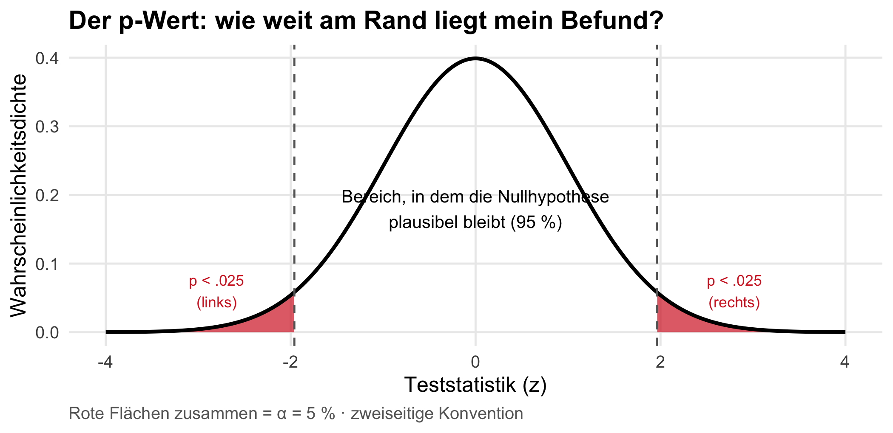
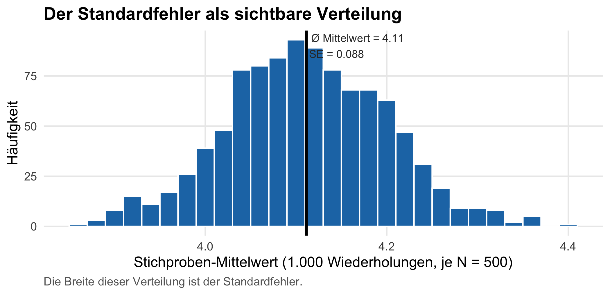
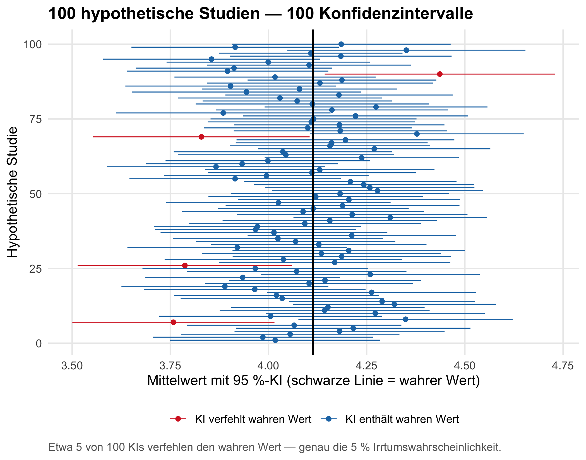
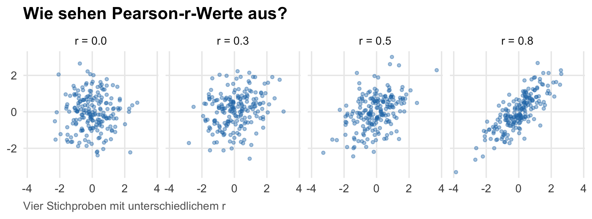
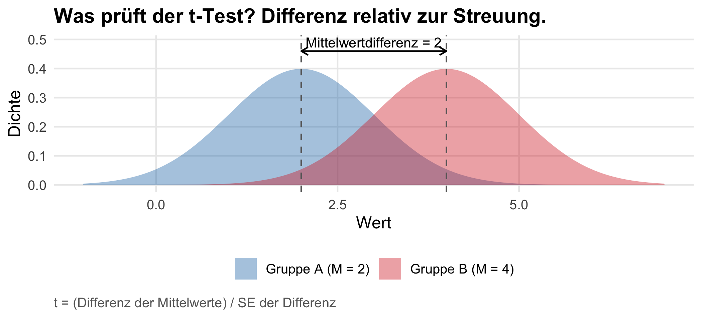
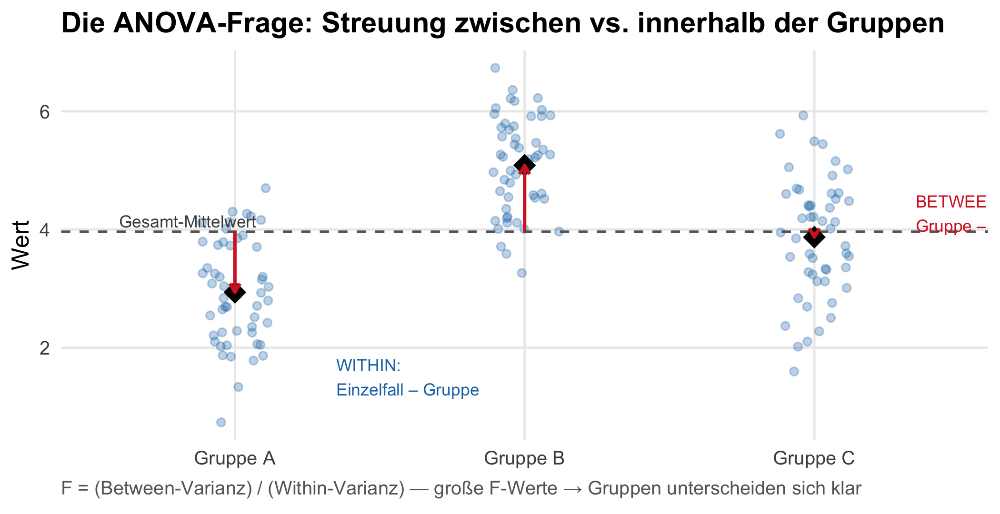

Nachdem du in Kapitel 5 die Datenpräp-Pipeline gebaut und in Kapitel 6 die ggplot2-Grammatik kennengelernt hast, beginnt jetzt die eigentliche Analyse. Wir gehen Schritt für Schritt von der einzelnen Variable bis zu Zusammenhängen zwischen zwei Variablen — und beantworten dabei die ersten Teilfragen unserer Mini-Studie:
Wie sieht die Verteilung von Islamfeindlichkeit in Deutschland 2023 aus? Unterscheiden sich Ost und West? Hängt Islamfeindlichkeit mit Populismus zusammen?
Hinweis
Forschungsjournal: Wo stehst du in deiner Mini-Studie? Du hast die Skalen, du beherrschst ggplot2 — jetzt sind die ersten Hypothesen-Tests dran. Am Ende dieses Kapitels weißt du, wie sich Islamfeindlichkeit verteilt, wo Mittelwertunterschiede zwischen Gruppen statistisch (und inhaltlich) bedeutsam sind und welche Variablen bivariat mit deiner Zielvariable zusammenhängen. Das ist die Bühne, auf der die multivariate Modellierung in Kapitel 9 aufbaut.
7.1 Worum es geht
Wer eine multivariate Regression rechnet, ohne vorher die Verteilung der Zielvariable angeschaut zu haben, arbeitet blind. Die Faustregel der empirischen Sozialforschung: erst beschreiben, dann erklären. Bevor du ein komplexes Modell aufsetzt, willst du wissen, wie deine Variablen aussehen — sind sie symmetrisch verteilt oder schief? Wo liegen die meisten Antworten? Korrelieren die wichtigsten Variablen überhaupt mit deiner Zielvariable, oder verlierst du Zeit mit irrelevanten Prädiktoren?
Die Statistik nennt diese ersten Schritte univariate und bivariate Analyse. Die Trennung ist einfach:
Univariat heißt: eine Variable für sich allein. Wie ist sie verteilt? Wo liegt ihr Mittelwert? Wie stark streuen die Werte? Eine Histogramm-Frage.
Bivariat heißt: zwei Variablen gemeinsam. Hängen sie zusammen? Unterscheiden sich Gruppen? Eine Scatterplot- oder Boxplot-Frage.
Bei der bivariaten Analyse gibt es zwei methodisch ähnliche, aber konzeptionell unterschiedliche Fragen, die du nicht verwechseln solltest:
Zusammenhang — variieren zwei Variablen gemeinsam? (Korrelation für metrische Variablen, Chi² für kategoriale.)
Unterschied — unterscheiden sich Gruppen in einer Variable? (t-Test, ANOVA für metrische Variablen pro Gruppe.)
Beide Fragen beantworten denselben methodischen Kern: Gibt es einen statistisch belastbaren Zusammenhang zwischen zwei Variablen? Aber die Werkzeuge und die Berichtsformate sind unterschiedlich.
Dieses Kapitel führt dich durch das mariposa-Inventar für jeden Standard-Test — Häufigkeit, Deskriptiva, Kreuztabelle, Korrelation, Mittelwertvergleich — jeweils gewichtet, mit Effektgröße und SPSS-vergleichbarem Output. Wenn du am Ende des Kapitels weißt, wie sich Islamfeindlichkeit verteilt, ob Ost und West sich unterscheiden, und ob Populismus damit zusammenhängt, hast du genau das Fundament gelegt, das du in Kapitel 9 für die multivariate Modellierung brauchst.
Was du nach diesem Kapitel kannst
Häufigkeitsverteilungen einer Variable berichten — gewichtet und ungewichtet.
Mittelwert, Median, Streuung, IQR, Schiefe, Wölbung und Standardfehler bestimmen.
Univariate Häufigkeiten gegen eine theoretische Verteilung testen (Binomialtest, χ²-GOF).
Kreuztabellen mit Chi-Quadrat-Test, Fisher-Test, McNemar-Test und Effektgrößen lesen.
Pearson-, Spearman- und Kendall-Korrelationen berechnen und interpretieren.
Mittelwerte zweier Gruppen mit einem t-Test vergleichen — inklusive Voraussetzungs-Check (Levene).
Mittelwerte mehrerer Gruppen mit einer einfaktoriellen ANOVA vergleichen und vier Post-Hoc-Verfahren wählen.
Nicht-parametrische Alternativen anwenden, wenn Voraussetzungen verletzt sind.
Effektgrößen einordnen — wann ein signifikanter Test inhaltlich klein, mittel oder groß ist.
Die drei Grundbegriffe statistischer Inferenz — p-Wert, Standardfehler, Konfidenzintervall — richtig lesen.
7.2 Über Gewichtung
In der ALLBUS-Stichprobe sind die neuen Bundesländer gewollt überrepräsentiert, damit Aussagen auch dort statistisch belastbar sind. Für deutschlandweite Schätzungen brauchst du daher das personenbezogene Ost-West-Gewichtwghtpew. Wenn du Gewichte ignorierst, sind deine Aussagen über „die Deutschen” verzerrt.
Tipp
SPSS → R. In SPSS aktivierst du Gewichtung einmal session-weit mit WEIGHT BY wghtpew. In R ist das anders: jede Funktion, die Gewichtung braucht, bekommt das Argument weights = einzeln. Das wirkt am Anfang umständlich, ist aber transparent — du siehst auf einen Blick, ob eine Analyse gewichtet ist.
In mariposa heißt das Argument durchgängig weights = wghtpew — egal, ob du eine Häufigkeitstabelle oder eine Regression rechnest.
7.3 Inferenz verstehen — was hinter jedem Test steckt
Bevor du den ersten Test rechnest, drei Begriffe, die in jedem Test-Output auftauchen — und die meisten Studis aus SPSS-Kursen mechanisch benutzen, ohne sie wirklich verstanden zu haben: p-Wert, Standardfehler, Konfidenzintervall. Wer diese drei richtig liest, kann jeden Test-Output sinnvoll interpretieren — wer sie missversteht, produziert Aussagen, die in einem Methoden-Seminar zerpflückt werden.
7.3.1 Was ist ein p-Wert?
Stell dir vor, du wirfst eine Münze 100 mal und bekommst 60 mal Kopf. Ist die Münze gezinkt — oder ist 60:40 auch bei einer fairen Münze einfach mal drin?
Der p-Wert beantwortet genau diese Frage. Er sagt dir, wie wahrscheinlich das beobachtete Ergebnis (oder ein noch extremeres) wäre, wenn in Wirklichkeit nichts los ist — also wenn die Nullhypothese stimmt. Bei der Münze heißt die Nullhypothese „Münze ist fair, Kopf-Wahrscheinlichkeit = 0.5”. Ein p-Wert von 0.057 bedeutet: wenn die Münze fair wäre, würdest du in 5.7 % aller Wiederholungs-Experimente 60 oder mehr Kopf-Treffer sehen.
Die Konvention p < .05 heißt: „Das Ergebnis ist so unwahrscheinlich unter der Nullhypothese, dass wir die Nullhypothese verwerfen — wir gehen davon aus, dass tatsächlich ein Effekt existiert.”
Bild dazu. Stell dir die Verteilung möglicher Testergebnisse unter der Nullhypothese als Glockenkurve vor. Die roten Flächen am Rand sind der Ablehnungsbereich — landest du dort mit deinem Befund, ist er „statistisch signifikant”:
p_data<-tibble(z =seq(-4, 4, length.out =500))|>mutate(d =dnorm(z))p_data|>ggplot(aes(x =z, y =d))+geom_area(data =filter(p_data, z>=qnorm(0.975)), fill ="#d62728", alpha =0.7)+geom_area(data =filter(p_data, z<=qnorm(0.025)), fill ="#d62728", alpha =0.7)+geom_line(linewidth =1)+geom_vline(xintercept =c(qnorm(0.025), qnorm(0.975)), linetype ="dashed", color ="grey40")+annotate("text", x =0, y =0.18, label ="Bereich, in dem die Nullhypothese\nplausibel bleibt (95 %)", size =3.5)+annotate("text", x =2.8, y =0.06, label ="p < .025\n(rechts)", color ="#d62728", size =3)+annotate("text", x =-2.8, y =0.06, label ="p < .025\n(links)", color ="#d62728", size =3)+labs(x ="Teststatistik (z)", y ="Wahrscheinlichkeitsdichte", title ="Der p-Wert: wie weit am Rand liegt mein Befund?", caption ="Rote Flächen zusammen = α = 5 % · zweiseitige Konvention")

Lesart. Je weiter dein Befund in eine rote Fläche reicht, desto kleiner wird der p-Wert — und desto unwahrscheinlicher ist er unter der Nullhypothese. Bei p = .03 liegst du gerade so im roten Bereich; bei p = .001 liegst du tief darin.
Warnung
Vorsicht: Klassische p-Wert-Fehlinterpretationen.
„p < .05 heißt: nur 5 % Chance, dass die Nullhypothese stimmt.” — Falsch. Der p-Wert sagt nichts über die Wahrscheinlichkeit der Nullhypothese aus. Er sagt nur, wie wahrscheinlich diese Daten unter der Nullhypothese wären.
„p < .05 heißt: der Effekt ist groß.” — Falsch.p misst, wie sicher du dir bist, dass es einen Effekt gibt — nicht, wie groß er ist. Bei N = 5.000 wird fast jeder noch so kleine Effekt signifikant. Effektgrößen messen die Stärke.
„p = .04 ist signifikant, p = .06 ist nicht.” — die .05-Grenze ist Konvention, keine Naturkonstante. p = .051 und p = .049 sind statistisch fast identisch. Lies p-Werte als kontinuierliches Maß für Evidenz, nicht als binäres Urteil.
7.3.2 Was ist ein Standardfehler?
Wenn du den ALLBUS 2023 erneut mit 5.246 anderen Befragten erheben würdest, käme nicht exakt derselbe Mittelwert für Islamfeindlichkeit heraus — sondern einer in der Nähe. Wenn du das 1.000 mal wiederholtest, hättest du 1.000 leicht unterschiedliche Mittelwerte. Die Streuung dieser hypothetischen Mittelwerte heißt Standardfehler (SE).
Der SE ist nicht dasselbe wie die Standardabweichung (SD):
SD = wie stark streuen die einzelnen Befragten um den Mittelwert? „Wie unterschiedlich sind die Menschen?“
SE = wie stark würde der Mittelwert streuen, wenn ich die Studie wiederholen würde? „Wie präzise ist meine Schätzung?“
Der SE ist immer kleiner als die SD und schrumpft mit größerer Stichprobe (Formel: SE = SD / √N). Je größer N, desto präziser die Schätzung. Das ist der Grund, warum große Stichproben kleinere SE haben — und damit engere Konfidenzintervalle und kleinere p-Werte.
Bild dazu. Wir können das simulieren: Ziehen 1.000 Mal eine zufällige Sub-Stichprobe (je N = 500) aus dem ALLBUS und rechnen den Mittelwert. Die Streuung dieser 1.000 Mittelwerte ist der Standardfehler — sichtbar gemacht:
set.seed(42)sim_mw<-replicate(1000, {ziehung<-sample(allbus$islamophobie, 500, replace =TRUE)mean(ziehung, na.rm =TRUE)})tibble(mittelwert =sim_mw)|>ggplot(aes(x =mittelwert))+geom_histogram(binwidth =0.02, fill ="#1f77b4", color ="white")+geom_vline(xintercept =mean(sim_mw), color ="black", linewidth =1)+annotate("text", x =mean(sim_mw), y =90, label =sprintf("Ø Mittelwert = %.2f\nSE = %.3f",mean(sim_mw), sd(sim_mw)), hjust =-0.05, color ="grey20", size =3.2)+labs(x ="Stichproben-Mittelwert (1.000 Wiederholungen, je N = 500)", y ="Häufigkeit", title ="Der Standardfehler als sichtbare Verteilung", caption ="Die Breite dieser Verteilung ist der Standardfehler.")

Lesart. Hätten wir nur eine einzige ALLBUS-Erhebung — wäre der Mittelwert irgendwo in dieser Verteilung gelandet. Die Standardabweichung der gezeigten Verteilung ist der Standardfehler unserer Schätzung.
7.3.3 Was ist ein Konfidenzintervall?
Das 95 %-Konfidenzintervall (KI) ist die natürliche Erweiterung des Standardfehlers. Statt nur den Punktschätzer (z. B. Mittelwert = 4.2) zu berichten, gibst du das Intervall an, in dem der wahre Wert plausibel liegen könnte: „M = 4.2, 95 %-KI [4.10, 4.30]“. Faustregel: 95 %-KI ≈ Mittelwert ± 1.96 × SE.
Warnung
Vorsicht: Die häufigste KI-Fehlinterpretation. Ein 95 %-KI heißt nicht „der wahre Wert liegt mit 95 %iger Wahrscheinlichkeit drin”. Es heißt: wenn du die Studie unendlich oft wiederholen und jedes Mal ein KI berechnen würdest, würden 95 % aller solchen Intervalle den wahren Wert einschließen. Der wahre Wert ist fest — das Intervall variiert über Wiederholungen.
In der Praxis ist die Faustregel für die Lesart einfacher: „Ein Wert außerhalb des 95 %-KI ist mit den Daten schwer vereinbar; ein Wert innerhalb ist mit den Daten vereinbar.”
Bild dazu. Simulieren wir 100 hypothetische Studien (je N = 200) aus dem ALLBUS, rechnen für jede den Mittelwert und das 95 %-KI — und schauen, wie viele den wahren Wert einschließen:
set.seed(2026)wahrer_wert<-mean(allbus$islamophobie, na.rm =TRUE)sim_kis<-map_dfr(1:100, function(i){ziehung<-sample(allbus$islamophobie, 200, replace =TRUE)ziehung<-ziehung[!is.na(ziehung)]mw<-mean(ziehung)se<-sd(ziehung)/sqrt(length(ziehung))tibble(studie =i, mw =mw, lower =mw-1.96*se, upper =mw+1.96*se)})sim_kis|>mutate(enthaelt =lower<=wahrer_wert&wahrer_wert<=upper)|>ggplot(aes(x =mw, y =studie, xmin =lower, xmax =upper, color =enthaelt))+geom_pointrange(size =0.2, linewidth =0.4)+geom_vline(xintercept =wahrer_wert, linewidth =1, color ="black")+scale_color_manual(values =c(`TRUE` ="#1f77b4", `FALSE` ="#d62728"), labels =c("KI verfehlt wahren Wert", "KI enthält wahren Wert"), name =NULL)+labs(x ="Mittelwert mit 95 %-KI (schwarze Linie = wahrer Wert)", y ="Hypothetische Studie", title ="100 hypothetische Studien — 100 Konfidenzintervalle", caption ="Etwa 5 von 100 KIs verfehlen den wahren Wert — genau die 5 % Irrtumswahrscheinlichkeit.")

Lesart. Du siehst SOFORT, was „95 %-Konfidenz” wirklich heißt: ungefähr 95 von 100 Intervallen schließen den wahren Wert ein, etwa 5 verfehlen ihn (rote Pointranges). Die einzelne Studie weißt du nicht, ob sie zu den 95 oder zu den 5 gehört — aber im Mittel trifft das Verfahren in 95 % der Fälle.
7.3.4 Effektgrößen vs. Signifikanz — die Zwillingsfrage
Ein Test beantwortet zwei Fragen, die du sauber trennen musst:
„Existiert der Effekt überhaupt?“ → p-Wert, Konfidenzintervall.
„Wie groß ist der Effekt?“ → Effektgröße (Cohens d, Hedges’ g, Cramérs V, R²).
Bei N = 5.246 (wie im ALLBUS) wird fast jeder Effekt signifikant — p sagt dir dann nur, dass du dir des Effekts sicher bist, nicht ob er etwas bedeutet. Die Effektgröße liefert das inhaltliche Urteil. Beide gehören in jeden Methodenbericht zusammen.
In den folgenden Test-Outputs siehst du genau diese drei Bausteine immer wieder: Schätzwert + p-Wert + KI + Effektgröße. Wenn du sie zusammen liest, hast du das Werkzeug, um Befunde sauber zu kommunizieren.
7.4 Univariate Statistik
7.4.1 Häufigkeitstabellen mit frequency()
frequency() aus mariposa ist das R-Pendant zu SPSS’ FREQUENCIES — gleicher Output (Wert, Label, N, Prozent, gültige Prozent, kumulierte Prozent) plus oben kurz die Streumaße.
Frage: Wie ist die Verteilung von Ost und West im gewichteten Sample?
Weighted Frequency Analysis Results
-----------------------------------
eastwest (ERHEBUNGSGEBIET (WOHNGEBIET): WEST - OST)
# total N=5246 valid N=5246 mean=NA sd=NA skewness=NA
+--------------------+--------------------+--------+--------+--------+--------+
| Value | Label | N | Raw % |Valid % | Cum. % |
+--------------------+--------------------+--------+--------+--------+--------+
| ALTE BUNDESLAENDER | ALTE BUNDESLAENDER | 4363 | 83.16 | 83.16 | 83.16 |
| NEUE BUNDESLAENDER | NEUE BUNDESLAENDER | 883 | 16.84 | 16.84 | 100.00 |
+--------------------+--------------------+--------+--------+--------+--------+
| Total | | 5246 | 100.00 | 100.00 | |
+--------------------+--------------------+--------+--------+--------+--------+
Lesart. Die gewichteten Häufigkeiten spiegeln das tatsächliche Verhältnis Ost/West in der deutschen Bevölkerung — ca. 83 % West, 17 % Ost. In den ungewichteten Rohdaten wäre Ost stärker vertreten gewesen.
Für eine ganze Itembatterie kombinierst du frequency() mit tidyselect-Helfern:
Weighted Frequency Analysis Results
-----------------------------------
mm01 (ISLAMAUSUEBUNG IN DEUTSCHL. BESCHRAENKEN)
# total N=5246 valid N=3401 mean=3.32 sd=2.16 skewness=0.44
+-----------+---------------------+--------+--------+--------+--------+
| Value | Label | N | Raw % |Valid % | Cum. % |
+-----------+---------------------+--------+--------+--------+--------+
| 1 | STIMME GAR NICHT ZU | 1077 | 20.53 | 31.66 | 31.66 |
| 2 | .. | 487 | 9.29 | 14.32 | 45.99 |
| 3 | .. | 298 | 5.69 | 8.77 | 54.76 |
| 4 | .. | 517 | 9.85 | 15.19 | 69.95 |
| 5 | .. | 322 | 6.15 | 9.48 | 79.43 |
| 6 | .. | 218 | 4.15 | 6.41 | 85.84 |
| 7 | STIMME VOLL+GANZ ZU | 482 | 9.18 | 14.16 | 100.00 |
+-----------+---------------------+--------+--------+--------+--------+
| Total | Total Valid | 3401 | 64.84 | 100.00 | NA |
+-----------+---------------------+--------+--------+--------+--------+
| -42 | DATENFEHLER: MFN | 2 | 0.05 | NA | NA |
| -11 | TNZ: SPLIT | 1646 | 31.38 | NA | NA |
| -9 | KEINE ANGABE | 73 | 1.39 | NA | NA |
| -8 | WEISS NICHT | 123 | 2.35 | NA | NA |
+-----------+---------------------+--------+--------+--------+--------+
| NA(total) | Total Missing | 1845 | 35.16 | NA | NA |
+-----------+---------------------+--------+--------+--------+--------+
mm02 (ISLAM PASST IN DIE DEUTSCHE GESELLSCHAFT)
# total N=5246 valid N=3400 mean=3.23 sd=1.86 skewness=0.42
+-----------+---------------------+--------+--------+--------+--------+
| Value | Label | N | Raw % |Valid % | Cum. % |
+-----------+---------------------+--------+--------+--------+--------+
| 1 | STIMME GAR NICHT ZU | 871 | 16.60 | 25.61 | 25.61 |
| 2 | .. | 527 | 10.04 | 15.49 | 41.10 |
| 3 | .. | 511 | 9.74 | 15.03 | 56.14 |
| 4 | .. | 650 | 12.40 | 19.13 | 75.27 |
| 5 | .. | 364 | 6.94 | 10.71 | 85.98 |
| 6 | .. | 250 | 4.76 | 7.35 | 93.32 |
| 7 | STIMME VOLL+GANZ ZU | 227 | 4.33 | 6.68 | 100.00 |
+-----------+---------------------+--------+--------+--------+--------+
| Total | Total Valid | 3400 | 64.81 | 100.00 | NA |
+-----------+---------------------+--------+--------+--------+--------+
| -42 | DATENFEHLER: MFN | 2 | 0.05 | NA | NA |
| -11 | TNZ: SPLIT | 1646 | 31.38 | NA | NA |
| -9 | KEINE ANGABE | 71 | 1.36 | NA | NA |
| -8 | WEISS NICHT | 126 | 2.40 | NA | NA |
+-----------+---------------------+--------+--------+--------+--------+
| NA(total) | Total Missing | 1846 | 35.19 | NA | NA |
+-----------+---------------------+--------+--------+--------+--------+
mm03 (ANWESENHEIT VON MUSLIMEN BRINGT KONFLIKT)
# total N=5246 valid N=3438 mean=4.09 sd=1.89 skewness=-0.05
+-----------+---------------------+--------+--------+--------+--------+
| Value | Label | N | Raw % |Valid % | Cum. % |
+-----------+---------------------+--------+--------+--------+--------+
| 1 | STIMME GAR NICHT ZU | 396 | 7.55 | 11.52 | 11.52 |
| 2 | .. | 461 | 8.80 | 13.42 | 24.94 |
| 3 | .. | 407 | 7.76 | 11.84 | 36.77 |
| 4 | .. | 719 | 13.71 | 20.92 | 57.69 |
| 5 | .. | 574 | 10.94 | 16.69 | 74.38 |
| 6 | .. | 404 | 7.69 | 11.74 | 86.12 |
| 7 | STIMME VOLL+GANZ ZU | 477 | 9.10 | 13.88 | 100.00 |
+-----------+---------------------+--------+--------+--------+--------+
| Total | Total Valid | 3438 | 65.54 | 100.00 | NA |
+-----------+---------------------+--------+--------+--------+--------+
| -42 | DATENFEHLER: MFN | 1 | 0.02 | NA | NA |
| -11 | TNZ: SPLIT | 1646 | 31.38 | NA | NA |
| -9 | KEINE ANGABE | 59 | 1.12 | NA | NA |
| -8 | WEISS NICHT | 101 | 1.93 | NA | NA |
+-----------+---------------------+--------+--------+--------+--------+
| NA(total) | Total Missing | 1808 | 34.46 | NA | NA |
+-----------+---------------------+--------+--------+--------+--------+
mm04 (STAAT SOLLTE ISLAM. GRUPPEN BEOBACHTEN)
# total N=5246 valid N=3422 mean=4.00 sd=2.07 skewness=0.01
+-----------+---------------------+--------+--------+--------+--------+
| Value | Label | N | Raw % |Valid % | Cum. % |
+-----------+---------------------+--------+--------+--------+--------+
| 1 | STIMME GAR NICHT ZU | 552 | 10.53 | 16.14 | 16.14 |
| 2 | .. | 494 | 9.42 | 14.44 | 30.59 |
| 3 | .. | 351 | 6.69 | 10.26 | 40.85 |
| 4 | .. | 601 | 11.46 | 17.57 | 58.42 |
| 5 | .. | 443 | 8.44 | 12.94 | 71.36 |
| 6 | .. | 392 | 7.47 | 11.45 | 82.80 |
| 7 | STIMME VOLL+GANZ ZU | 589 | 11.22 | 17.20 | 100.00 |
+-----------+---------------------+--------+--------+--------+--------+
| Total | Total Valid | 3422 | 65.24 | 100.00 | NA |
+-----------+---------------------+--------+--------+--------+--------+
| -42 | DATENFEHLER: MFN | 4 | 0.08 | NA | NA |
| -11 | TNZ: SPLIT | 1646 | 31.38 | NA | NA |
| -9 | KEINE ANGABE | 65 | 1.25 | NA | NA |
| -8 | WEISS NICHT | 108 | 2.05 | NA | NA |
+-----------+---------------------+--------+--------+--------+--------+
| NA(total) | Total Missing | 1824 | 34.76 | NA | NA |
+-----------+---------------------+--------+--------+--------+--------+
mm05 (MUSLIMISCHER BUERGERMEISTER IN ORDNUNG)
# total N=5246 valid N=3408 mean=4.31 sd=2.30 skewness=-0.25
+-----------+---------------------+--------+--------+--------+--------+
| Value | Label | N | Raw % |Valid % | Cum. % |
+-----------+---------------------+--------+--------+--------+--------+
| 1 | STIMME GAR NICHT ZU | 741 | 14.13 | 21.75 | 21.75 |
| 2 | .. | 267 | 5.10 | 7.85 | 29.60 |
| 3 | .. | 218 | 4.16 | 6.41 | 36.01 |
| 4 | .. | 459 | 8.75 | 13.47 | 49.48 |
| 5 | .. | 339 | 6.47 | 9.96 | 59.43 |
| 6 | .. | 468 | 8.92 | 13.73 | 73.17 |
| 7 | STIMME VOLL+GANZ ZU | 915 | 17.43 | 26.83 | 100.00 |
+-----------+---------------------+--------+--------+--------+--------+
| Total | Total Valid | 3408 | 64.97 | 100.00 | NA |
+-----------+---------------------+--------+--------+--------+--------+
| -11 | TNZ: SPLIT | 1646 | 31.38 | NA | NA |
| -9 | KEINE ANGABE | 71 | 1.35 | NA | NA |
| -8 | WEISS NICHT | 120 | 2.29 | NA | NA |
+-----------+---------------------+--------+--------+--------+--------+
| NA(total) | Total Missing | 1838 | 35.03 | NA | NA |
+-----------+---------------------+--------+--------+--------+--------+
mm06 (UNTER MUSLIMEN SIND VIELE REL. FANATIKER)
# total N=5246 valid N=3317 mean=4.21 sd=1.99 skewness=-0.04
+-----------+---------------------+--------+--------+--------+--------+
| Value | Label | N | Raw % |Valid % | Cum. % |
+-----------+---------------------+--------+--------+--------+--------+
| 1 | STIMME GAR NICHT ZU | 333 | 6.34 | 10.03 | 10.03 |
| 2 | .. | 546 | 10.40 | 16.45 | 26.48 |
| 3 | .. | 377 | 7.18 | 11.35 | 37.83 |
| 4 | .. | 565 | 10.76 | 17.02 | 54.85 |
| 5 | .. | 478 | 9.11 | 14.41 | 69.26 |
| 6 | .. | 376 | 7.18 | 11.35 | 80.61 |
| 7 | STIMME VOLL+GANZ ZU | 643 | 12.26 | 19.39 | 100.00 |
+-----------+---------------------+--------+--------+--------+--------+
| Total | Total Valid | 3317 | 63.23 | 100.00 | NA |
+-----------+---------------------+--------+--------+--------+--------+
| -11 | TNZ: SPLIT | 1646 | 31.38 | NA | NA |
| -9 | KEINE ANGABE | 100 | 1.91 | NA | NA |
| -8 | WEISS NICHT | 182 | 3.47 | NA | NA |
+-----------+---------------------+--------+--------+--------+--------+
| NA(total) | Total Missing | 1929 | 36.77 | NA | NA |
+-----------+---------------------+--------+--------+--------+--------+
Tipp
Tipp: fre() als SPSS-naher Alias. Wer aus SPSS umsteigt, tippt eher fre(allbus, sex) als frequency(...). mariposa exportiert fre() als Alias mit identischer Funktionsweise und identischen Argumenten.
7.4.2 Deskriptive Statistik mit describe()
Mit describe() bekommst du Mittelwert, Median, Standardabweichung, Range, IQR und Schiefe für eine oder mehrere Variablen.
Frage: Wo liegt der durchschnittliche Skalenwert für Islamfeindlichkeit?
allbus|>describe(islamophobie, weights =wghtpew)
Weighted Descriptive Statistics
-------------------------------
Variable Mean Median SD Range IQR Skewness Effective_N
islamophobie 4.012 4 1.516 6 2.333 0.207 3006.2
----------------------------------------
Lesart. Der gewichtete Mittelwert von rund 4 auf einer 1–7-Skala bedeutet: Deutschland liegt — gemittelt — in der Mitte der Skala, mit deutlicher Streuung (SD ≈ 1.5).
Weighted Descriptive Statistics
-------------------------------
Variable Mean Median SD Range IQR Skewness Effective_N
islamophobie 4.012 4.000 1.516 6 2.333 0.207 3006.2
populismus 3.354 3.286 0.759 4 1.000 0.056 3204.6
age 52.104 54.000 18.289 81 29.000 -0.009 4721.9
----------------------------------------
Hinweis
Konzept: Was sind Schiefe und Wölbung? Zwei Formmaße, die der describe()-Output für jede Variable mitliefert — und die einen guten Verteilungs-Charakter auf einen Blick verraten.
Schiefe = Symmetrie. Symmetrisch (Schiefe ≈ 0) → klassische Glocke. Linksschief (negativ) → langer Ausläufer nach links (typisch bei Zufriedenheits-Skalen, wo die meisten „hoch” antworten). Rechtsschief (positiv) → langer Ausläufer nach rechts (typisch bei Einkommens-Verteilungen).
Wölbung (Kurtosis) = Spitze vs. flach. Hoch (leptokurtisch) = spitze Verteilung mit dicken Rändern; niedrig (platykurtisch) = flachere Verteilung.
Manchmal brauchst du nicht eine ganze Tabelle, sondern einen Wert — etwa für eine summarise()-Pipeline oder eine Caption. mariposa hat dafür gewichtete Einzel-Funktionen:
Im Zusammenspiel mit group_by()/summarise() baust du dir eigene Subgruppen-Tabellen:
allbus|>filter(!is.na(eastwest))|>summarise( n =n(), mittelwert =w_mean(islamophobie, weights =wghtpew), sd =w_sd(islamophobie, weights =wghtpew), se =w_se(islamophobie, weights =wghtpew), .by =eastwest)
# A tibble: 2 × 5
eastwest n mittelwert sd se
<fct> <int> <dbl> <dbl> <dbl>
1 ALTE BUNDESLAENDER 3567 3.90 1.47 0.0279
2 NEUE BUNDESLAENDER 1679 4.55 1.61 0.0680
Das ist die R-Variante zum SPSS-AGGREGATE mit WEIGHT BY — alles in einem Block, in einem Pipe-Fluss.
7.4.4 Häufigkeits-Tests mit binomial_test() und chisq_gof()
Wenn du prüfen willst, ob eine beobachtete Häufigkeit signifikant von einem theoretischen Anteil abweicht, brauchst du keinen Vergleich mit einer anderen Variable — ein Test gegen einen festen Wert genügt.
Frage: Weicht der Frauenanteil in der gewichteten Stichprobe signifikant von 50 % ab?
allbus|>filter(sex%in%c(1, 2))|># nur Mann/Frau (Divers eigene Kategorie)binomial_test(sex, p =0.5, weights =wghtpew)
Weighted Binomial Test Results
------------------------------
- Test proportion: 0.5
- Confidence level: 95.0%
- Weights variable: wghtpew
sex
---
Categories:
-------------------------------
N Observed Prop.
Group 1: 1 2546 0.488
Group 2: 2 2672 0.512
Total 5218 1.000
-------------------------------
Weighted Test Statistics:
-----------------------------------------
Test Prop. p value CI lower CI upper sig
0.5 0.084 0.474 0.502
-----------------------------------------
Note: Weighted analysis uses rounded frequency weights.
Signif. codes: 0 '***' 0.001 '**' 0.01 '*' 0.05
Für mehr als zwei Ausprägungen — etwa „ist die Bildungsverteilung gleichmäßig auf alle Stufen?” — ist chisq_gof() der Goodness-of-Fit-Test:
Beide Tests geben Erwartungswerte, Beobachtungen und einen p-Wert zurück — sauber dokumentiert, was getestet wurde.
7.5 Bivariate Statistik
Welche Frage → welcher Test? Bevor du in die Tests einsteigst, eine Landkarte. Welches Verfahren du brauchst, hängt vom Skalenniveau der zwei Variablen ab:
Variable 1
Variable 2
Test (mariposa)
Effektgröße
kategorial
kategorial
chi_square()
Cramérs V / Phi
kategorial (2 Gruppen)
metrisch
t_test()
Hedges’ g
kategorial (≥ 3 Gruppen)
metrisch
oneway_anova()
η²
metrisch
metrisch
pearson_cor()
r (selbst Effekt)
ordinal
ordinal
spearman_rho() / kendall_tau()
ρ / τ
Wenn du dich verirrst — diese Tabelle ist dein Anker.
Hinweis
Hintergrund: Warum Effektgrößen? Ein signifikanter p-Wert sagt dir nur, dass ein Unterschied oder Zusammenhang von Zufall verschieden ist — wie stark er ist, sagt er nicht. Bei großen Stichproben (wie 5.246 ALLBUS-Fällen) sind fast alle Unterschiede statistisch signifikant. Effektgrößen ergänzen den p-Wert um die inhaltliche Größenordnung. Faustregeln für die wichtigsten Maße:
Maß
Klein
Mittel
Groß
Cramérs V (Chi²)
≥ 0.10
≥ 0.30
≥ 0.50
Pearson r (Korrelation)
≥ 0.10
≥ 0.30
≥ 0.50
Hedges’ g (t-Test)
≥ 0.20
≥ 0.50
≥ 0.80
η² (ANOVA)
≥ 0.01
≥ 0.06
≥ 0.14
Die mariposa-Tests geben dir Effektgrößen automatisch zurück — du musst sie nur lesen und einordnen.
7.5.1 Kreuztabellen mit crosstab()
Bei zwei kategorialen Variablen — etwa Bildung × Region — kannst du keinen Mittelwertvergleich rechnen und keine Korrelation im klassischen Sinne. Die richtige Darstellung ist eine Kreuztabelle: Zeilen für die eine Variable, Spalten für die andere, Zellen mit den Häufigkeiten. Aus der Tabelle liest du direkt ab, ob bestimmte Kombinationen häufiger vorkommen als andere — der Standard-Anfang jeder Analyse mit kategorialen Variablen.
crosstab() aus mariposa erzeugt diese Tabelle inklusive Zeilen-/Spalten-/Gesamtprozenten. Standard ist die Zeilenprozentuierung — also: was passiert in jeder Zeile, wenn man sie auf 100 Prozent skaliert? Damit liest du bedingte Wahrscheinlichkeiten: „Welcher Anteil der Westdeutschen hat hohe Bildung im Vergleich zu welchem Anteil der Ostdeutschen?“.
Frage: Verteilt sich Bildung anders in Ost und West?
Drei Prozentuierungs-Richtungen — und sie beantworten verschiedene Fragen:
Argument
Lesart
Wann sinnvoll
prop = "row" (Default)
„Wie verteilt sich Bildung innerhalb von Ost / West?”
erklärende Variable in der Zeile
prop = "col"
„Wie verteilt sich Ost / West innerhalb jeder Bildungsstufe?”
erklärende Variable in der Spalte
prop = "total"
„Wie viel Prozent aller Fälle sind in jeder Zelle?”
Gemeinsame Verteilung im Überblick
Mit show = "n" siehst du nur die Zellenzahlen ohne Prozentuierung.
7.5.2 Chi-Quadrat-Test mit chi_square()
Eine Kreuztabelle beschreibt — aber sie sagt dir noch nicht, ob die beobachteten Muster statistisch belastbar sind oder ob sie auch durch Zufall in der Stichprobe entstanden sein könnten. Genau diese Frage beantwortet der Chi-Quadrat-Test (χ²): Er vergleicht die tatsächlichen Häufigkeiten in jeder Zelle mit den Häufigkeiten, die man unter der Annahme völliger Unabhängigkeit zwischen den beiden Variablen erwarten würde. Sind die beobachteten Werte deutlich anders, gibt es einen Zusammenhang.
Hinweis
Konzept: Was vergleicht χ² konkret? Stell dir eine kleine 2 × 2-Tabelle vor: Region (Ost/West) × Bildung (niedrig/hoch). Insgesamt 1.000 Befragte:
niedrige Bildung
hohe Bildung
Summe
West
350
450
800
Ost
130
70
200
Summe
480
520
1.000
Wenn Region und Bildung unabhängig wären, müsste in jeder Zelle die Häufigkeit dem Produkt der Randanteile entsprechen. Beispiel West × hoch: 800/1000 × 520/1000 × 1000 = 416 wären erwartet. Beobachtet sind aber 450. Diese Differenz (450 − 416 = 34) ist für jede Zelle der Bauteil des χ²-Wertes; je größer alle Differenzen zusammen, desto größer χ² — desto unwahrscheinlicher die Unabhängigkeit.
Genau diese Vergleichslogik („beobachtet vs. erwartet unter Unabhängigkeit”) steckt unter der Haube von chi_square() — du musst sie nicht händisch rechnen, aber wenn du sie verstehst, weißt du auch, warum der Test bei kleinen erwarteten Häufigkeiten (< 5) instabil wird: dann fallen einzelne große Differenzen relativ stark ins Gewicht.
Statt erst eine Kreuztabelle zu rechnen und dann den χ²-Test anzustoßen, gibt dir mariposa beides in einer Zeile — der Test kommt mit Effektgrößen (Cramérs V, Phi, Gamma). Die Effektgrößen sind hier besonders wichtig: Wie beim t-Test wird χ² bei großen N fast immer signifikant; erst Cramérs V sagt dir, ob der Zusammenhang inhaltlich groß ist.
Frage: Hängen Bildung und Region statistisch zusammen?
Chi-Squared Test: eastwest × educ [Weighted]
chi2(6) = 83.582, p < 0.001 ***, V = 0.128 (small), N = 5131
Lesart. Du erhältst χ² mit Freiheitsgraden, p-Wert und drei Effektgrößen mit Interpretation: Cramérs V (universell, 0–1), Phi (für 2×2-Tabellen, ±) und Goodman-Kruskal Gamma (für ordinale Variablen, ±).
Wichtig
mariposa-Tipp: Effekt-Aliase. mariposa exportiert cramers_v(), phi() und goodman_gamma() als Aliase für chi_square() — funktional identisch, aber sprechender, wenn du im Code klarmachen willst, welche Effektgröße im Vordergrund steht. Konvention: phi() für 2×2-Tabellen, cramers_v() für größere Kreuztabellen, goodman_gamma() für ordinale Variablen.
Hinweis
Hintergrund: Verwandte Tests. - fisher_test() — exakter Test bei kleinen Erwarteten (< 5 in mehr als 20 % der Zellen). Kein Erwartungswert-Limit, dafür rechenintensiv. - chisq_gof() — Goodness-of-Fit, eine Variable gegen eine theoretische Verteilung (siehe Kapitel 7.4). - mcnemar_test() — gepaarte 2×2-Tabellen (vorher/nachher, Test-Retest).
7.5.3 Korrelation
Eine Korrelation ist die einfachste Antwort auf die Frage: „Bewegen sich zwei Variablen gemeinsam?“ Wer hohe Werte auf der einen Skala hat, hat auch hohe Werte auf der anderen? Oder genau umgekehrt? Oder gibt es keinen Zusammenhang?
Der bekannteste Index dafür ist Pearsons r. Mathematisch ist er die standardisierte Kovarianz — die gemeinsame Schwingung zweier Variablen, geteilt durch die Einzelstreuung:
Lies sie als: „wie stark schwingen x und y gemeinsam — in Einheiten der typischen Einzel-Schwingung.” Durch die Division liegt \(r\) immer zwischen \(-1\) und \(+1\):
r = +1 → perfekter positiver Zusammenhang (steigt eines, steigt das andere proportional)
r = 0 → kein linearer Zusammenhang
r = -1 → perfekter negativer Zusammenhang
In der Sozialforschung sind Werte um 0.4 schon ein deutlicher Befund. Werte über 0.7 sind selten — und wenn doch, oft ein Hinweis, dass die zwei Variablen letztlich dasselbe messen.
Wie sehen verschiedene Korrelationen aus? Vier simulierte Punktwolken — von „völlig wirr” bis „klar geneigt”:
set.seed(11)sim_cor<-function(r, n=200){x<-rnorm(n); y<-r*x+sqrt(1-r^2)*rnorm(n)tibble(x =x, y =y, r_label =sprintf("r = %.1f", r))}bind_rows(sim_cor(0), sim_cor(0.3), sim_cor(0.5), sim_cor(0.8))|>mutate(r_label =factor(r_label, levels =c("r = 0.0", "r = 0.3", "r = 0.5", "r = 0.8")))|>ggplot(aes(x, y))+geom_point(alpha =0.4, color ="#1f77b4", size =1)+facet_wrap(~r_label, ncol =4)+labs(x =NULL, y =NULL, title ="Wie sehen Pearson-r-Werte aus?", caption ="Vier Stichproben mit unterschiedlichem r")

Lesart. Bei r = 0 ist die Wolke rund. Bei r = 0.3 ist eine leichte Neigung erkennbar. Bei r = 0.5 wird sie eindeutig. Bei r = 0.8 ist die Wolke fast eine schräge Ellipse. Vergleich mit dem ALLBUS-Wert: +0.41 für Islamfeindlichkeit × Populismus sieht etwa wie das r = 0.3 – 0.5-Bild oben aus.
Drei verschiedene Korrelationskoeffizienten stehen zur Verfügung — alle akzeptieren das weights =-Argument:
Funktion
Skalenniveau
Wann sinnvoll
pearson_cor()
intervall, normalverteilt
klassischer linearer Zusammenhang
spearman_rho()
ordinal oder schief
wenn Linearität / Normalverteilung fragwürdig
kendall_tau()
ordinal, kleine N
robuste Variante, gut bei Bindungen
Frage: Hängen Islamfeindlichkeit und Populismus zusammen?
Pearson Correlation: islamophobie x populismus [Weighted]
r = 0.406, p < 0.001 ***, N = 1903
Lesart. Der gewichtete Pearson-r liegt bei etwa +0.41 — das ist ein klar positiver Zusammenhang. Nach der Effektgrößen-Faustregel oben (Cohen: r ≥ .10 klein, ≥ .30 mittel, ≥ .50 groß) bedeutet das einen mittleren bis großen Effekt. Wer hohe Werte auf der Populismus-Skala hat, tendiert auch zu höheren Werten bei Islamfeindlichkeit. Das ist kein Schluss auf Kausalität — die Korrelation sagt nicht, ob Populismus Islamfeindlichkeit fördert oder umgekehrt oder ob beides von einer dritten Variable (z. B. Bildung) getrieben wird. Die multivariate Regression in Kapitel 9.4 zerlegt das.
Eine ganze Korrelationsmatrix bekommst du, indem du mehrere Variablen oder einen tidyselect-Ausdruck übergibst:
Pearson Correlation: 9 variables [Weighted]
mm07 x mm01: r = 0.619, p < 0.001 ***
mm07 x mm02: r = -0.531, p < 0.001 ***
mm07 x mm03: r = 0.432, p < 0.001 ***
mm07 x mm04: r = 0.460, p < 0.001 ***
mm07 x mm05: r = -0.502, p < 0.001 ***
mm07 x mm06: r = 0.465, p < 0.001 ***
mm07 x mm02r: r = 0.531, p < 0.001 ***
mm07 x mm05r: r = 0.502, p < 0.001 ***
mm01 x mm02: r = -0.459, p < 0.001 ***
mm01 x mm03: r = 0.520, p < 0.001 ***
mm01 x mm04: r = 0.548, p < 0.001 ***
mm01 x mm05: r = -0.488, p < 0.001 ***
mm01 x mm06: r = 0.536, p < 0.001 ***
mm01 x mm02r: r = 0.459, p < 0.001 ***
mm01 x mm05r: r = 0.488, p < 0.001 ***
mm02 x mm03: r = -0.368, p < 0.001 ***
mm02 x mm04: r = -0.361, p < 0.001 ***
mm02 x mm05: r = 0.450, p < 0.001 ***
mm02 x mm06: r = -0.381, p < 0.001 ***
mm02 x mm02r: r = -1.000, p < 0.001 ***
mm02 x mm05r: r = -0.450, p < 0.001 ***
mm03 x mm04: r = 0.548, p < 0.001 ***
mm03 x mm05: r = -0.348, p < 0.001 ***
mm03 x mm06: r = 0.524, p < 0.001 ***
mm03 x mm02r: r = 0.368, p < 0.001 ***
mm03 x mm05r: r = 0.348, p < 0.001 ***
mm04 x mm05: r = -0.341, p < 0.001 ***
mm04 x mm06: r = 0.564, p < 0.001 ***
mm04 x mm02r: r = 0.361, p < 0.001 ***
mm04 x mm05r: r = 0.341, p < 0.001 ***
mm05 x mm06: r = -0.363, p < 0.001 ***
mm05 x mm02r: r = -0.450, p < 0.001 ***
mm05 x mm05r: r = -1.000, p < 0.001 ***
mm06 x mm02r: r = 0.381, p < 0.001 ***
mm06 x mm05r: r = 0.363, p < 0.001 ***
mm02r x mm05r: r = 0.450, p < 0.001 ***
36/36 pairs significant (p < .05), N = 3358
Tipp
POMPS und Korrelationen. Wenn du die Korrelation auf den POMPS-Versionen islamophobie_p und populismus_p aus Kapitel 5.8 rechnest, bekommst du identische Werte — POMPS ist eine lineare Transformation, Korrelationen sind invariant. POMPS hilft bei Mittelwertvergleichen über Skalen hinweg, nicht bei Korrelationen.
7.6 Mittelwertvergleiche
Voraussetzungs-Checkliste. Bevor du t-Test, ANOVA oder Korrelation rechnest — ein Mini-Check, was die Verfahren brauchen. In der Praxis sind sie bei großen Stichproben robust gegen kleinere Verletzungen; trotzdem gehört der Check zum Methoden-Bericht.
Test
Skalenniveau AV
Verteilung
Sonst-Annahme
Bei N > 100
chi_square()
kategorial
—
erwartete Häufigkeit ≥ 5
unkritisch
pearson_cor()
metrisch
bivariat normal
linearer Zusammenhang
robust
t_test() (Welch)
metrisch (in Gruppen)
annähernd normal
Welch-Variante deckt Varianzungleichheit
robust
oneway_anova()
metrisch (in Gruppen)
annähernd normal
Varianzhomogenität
robust
Bei klar schiefen Verteilungen oder N < 30 pro Gruppe greifst du zu den nicht-parametrischen Alternativen (mann_whitney(), kruskal_wallis(), spearman_rho()).
7.6.1 t-Test mit t_test()
Der t-Test ist eines der ältesten Werkzeuge der inferenziellen Statistik (William Gosset hat ihn 1908 unter dem Pseudonym „Student” veröffentlicht, weil sein Arbeitgeber Guinness Brauereigeheimnisse fürchtete). Die Frage, die er beantwortet, ist sehr konkret: „Du siehst zwei Gruppen, die scheinbar unterschiedliche Mittelwerte haben. Wäre dieser Unterschied auch durch reinen Zufall in einer Stichprobe entstanden — oder ist er groß genug, dass man davon ausgehen kann, dass es in der Bevölkerung wirklich einen Unterschied gibt?“
Der t-Test gibt dir darauf drei Antworten in einem Aufruf: die Stärke des Unterschieds (Mittelwertdifferenz), die Wahrscheinlichkeit eines Zufallsbefunds (p-Wert) und die Effektgröße (Hedges’ g) — also wie groß der Unterschied inhaltlich ist, unabhängig von der Stichprobengröße. Die letzte Zahl ist die wichtigste: bei N = 5000 ist fast jeder Unterschied statistisch signifikant. Erst die Effektgröße sagt dir, ob er auch inhaltlich relevant ist.
Bild dazu. Stell dir zwei Glockenkurven für zwei Gruppen vor. Die Mittelwertdifferenz allein sagt noch nichts — entscheidend ist sie relativ zur Überlappung der Verteilungen:
t_data<-tibble(x =seq(-1, 7, length.out =500))|>mutate(`Gruppe A (M = 2)` =dnorm(x, mean =2, sd =1), `Gruppe B (M = 4)` =dnorm(x, mean =4, sd =1))t_data|>pivot_longer(-x, names_to ="gruppe", values_to ="d")|>ggplot(aes(x =x, y =d, fill =gruppe))+geom_area(alpha =0.4, position ="identity")+geom_vline(xintercept =c(2, 4), linetype ="dashed", color ="grey40")+annotate("segment", x =2, xend =4, y =0.46, yend =0.46, arrow =arrow(ends ="both", length =unit(0.2, "cm")))+annotate("text", x =3, y =0.49, label ="Mittelwertdifferenz = 2", size =3.5)+scale_fill_manual(values =c("#1f77b4", "#d62728"), name =NULL)+labs(x ="Wert", y ="Dichte", title ="Was prüft der t-Test? Differenz relativ zur Streuung.", caption =expression(paste("t = (Differenz der Mittelwerte) / SE der Differenz")))

Lesart. Je größer die Differenz und je schmaler die beiden Verteilungen (= je kleiner die Streuung), desto klarer trennen sich die Gruppen — und desto größer wird t. Wären beide Verteilungen breit (mit viel Überlappung), wäre selbst eine Differenz von 2 nicht signifikant.
Frage: Unterscheiden sich Ost und West in ihrer Islamfeindlichkeit?
allbus|>t_test(islamophobie, group =eastwest, weights =wghtpew)
t-Test: islamophobie by eastwest [Weighted]
t(764.0) = -8.784, p < 0.001 ***, g = -0.431 (small), N = 3344
Lesart. Du erhältst t, df, p-Wert und Hedges’ g (eine Effektgröße ähnlich Cohens d, aber für kleine N robuster). Die Reihenfolge der Gruppen in der Ausgabe verrät dir die Richtung des Unterschieds.
Hinweis
Forschungshintergrund: Ost-West-Vergleich als methodischer Klassiker. Die Gegenüberstellung von Ost- und Westdeutschland ist eine der ältesten methodischen Vergleichsachsen der deutschen politischen Soziologie. Sie ist robust, gut interpretierbar — und in der Vorurteilsforschung umkämpft: Ein Ost-West-Unterschied bei Islamfeindlichkeit kann strukturell sein (Kontakt-Hypothese: weniger muslimische Bevölkerung im Osten → mehr Vorurteile), historisch (DDR-Sozialisationsfolgen, transformationsbedingte Statusängste) oder kohortenspezifisch (Altersstruktur unterschiedlich). Der t-Test sagt dir, dass ein Unterschied existiert — nicht, warum. Die multiple Regression in Kapitel 9 versucht, das auseinanderzunehmen.
Hinweis
Hintergrund: Welcher t-Test? Standardmäßig rechnet t_test() den Welch-t-Test, der ungleiche Varianzen erlaubt. Wenn du den klassischen Student-t möchtest, setze var.equal = TRUE. Für die Praxis gilt: der Welch-Test ist fast immer die sichere Wahl.
Hinweis
Reviewer-Hinweis. Beim t-Test in einer Publikation gehört berichtet: gewichtetes oder ungewichtetes N pro Gruppe, Mittelwerte und SDs pro Gruppe, t, df, p, Effektgröße (Hedges’ g oder Cohens d) plus 95 %-KI für die Mittelwertdifferenz. p allein reicht nicht — bei N > 1000 sind fast alle Effekte „signifikant”, aber inhaltlich womöglich winzig.
Hinweis
Hintergrund: Varianzhomogenität prüfen. Wenn du explizit testen willst, ob die Varianzen in den Gruppen gleich sind, ist der Levene-Test das Standardwerkzeug:
allbus|>t_test(islamophobie, group =eastwest, weights =wghtpew)|>levene_test()
Weighted Levene's Test for Homogeneity of Variance
---------------------------------------------------
- Grouping variable: eastwest
- Weights variable: wghtpew
- Center: mean
--- islamophobie ---
Weighted Levene's Test Results:
---------------------------------------------------------------------------
Variable F_statistic df1 df2 p_value sig Conclusion
islamophobie 16.995 1 3342.236 0 *** Variances unequal
---------------------------------------------------------------------------
Signif. codes: 0 '***' 0.001 '**' 0.01 '*' 0.05
Interpretation:
- p > 0.05: Variances are homogeneous (equal variances assumed)
- p <= 0.05: Variances are heterogeneous (equal variances NOT assumed)
Recommendation based on Levene test:
- Use Welch's t-test (unequal variances)
Signifikanter Levene-Test → Varianzen unterscheiden sich → Welch-Variante ist die richtige Wahl. Da t_test() ohnehin Welch nutzt, ist das eher eine Begründung in der Methodenbeschreibung als eine Entscheidungshilfe.
7.6.2 ANOVA mit oneway_anova()
Der t-Test funktioniert nur für zwei Gruppen. Sobald du drei oder mehr hast — etwa drei Bildungsgruppen oder fünf Altersklassen —, brauchst du ein anderes Werkzeug: die einfaktorielle Varianzanalyse, kurz ANOVA (Analysis of Variance).
Ihr Trick ist elegant. Statt jedes Gruppenpaar einzeln zu vergleichen (was bei vielen Gruppen zu vielen falsch-positiven Befunden führen würde), prüft die ANOVA eine einzige Frage: Streuen die Mittelwerte zwischen den Gruppen mehr, als man aufgrund der Streuung innerhalb der Gruppen erwarten würde? Wenn ja, gibt es mindestens einen Gruppenunterschied. Welches Paar es genau ist, sagt die ANOVA dir nicht — das beantworten Post-Hoc-Tests, die später kommen.
Das wichtigste Maß im ANOVA-Output ist neben dem F-Wert und dem p-Wert die Effektgröße η² (eta-quadrat): der Anteil der Varianz in der abhängigen Variable, der durch die Gruppierung erklärt wird. Ein η² von 0.01 bedeutet, dass die Gruppen 1 Prozent der Varianz erklären — statistisch oft signifikant bei großen N, aber inhaltlich winzig. Ein η² von 0.10 oder größer ist schon ein substanzieller Effekt.
Bild dazu. Die ANOVA zerlegt die Gesamtstreuung in zwei Bausteine. Drei Gruppen mit ihren Mittelwerten (Rauten) und Einzelfällen (Punkte):
set.seed(3)anova_demo<-tibble( gruppe =factor(rep(c("Gruppe A", "Gruppe B", "Gruppe C"), each =50)), wert =c(rnorm(50, 3, 1), rnorm(50, 5, 1), rnorm(50, 4, 1)))means<-anova_demo|>summarise(mw =mean(wert), .by =gruppe)grand_mean<-mean(anova_demo$wert)anova_demo|>ggplot(aes(x =gruppe, y =wert))+geom_jitter(alpha =0.3, color ="#1f77b4", width =0.12, height =0)+geom_hline(yintercept =grand_mean, linetype ="dashed", color ="grey40")+geom_point(data =means, aes(y =mw), size =5, color ="black", shape =18)+geom_segment(data =means,aes(x =gruppe, xend =gruppe, y =grand_mean, yend =mw), arrow =arrow(length =unit(0.18, "cm")), color ="#d62728", linewidth =0.8)+annotate("text", x =0.6, y =grand_mean+0.18, label ="Gesamt-Mittelwert", color ="grey30", size =3, hjust =0)+annotate("text", x =3.35, y =means$mw[3]+0.4, label ="BETWEEN:\nGruppe – Gesamt", color ="#d62728", size =3, hjust =0)+annotate("text", x =1.35, y =1.5, label ="WITHIN:\nEinzelfall – Gruppe", color ="#1f77b4", size =3, hjust =0)+scale_x_discrete(expand =expansion(add =0.6))+labs(x =NULL, y ="Wert", title ="Die ANOVA-Frage: Streuung zwischen vs. innerhalb der Gruppen", caption =expression(paste("F = (Between-Varianz) / (Within-Varianz) — große F-Werte → Gruppen unterscheiden sich klar")))

Lesart.Between (rote Pfeile) = wie weit liegen die Gruppen-Mittelwerte auseinander? Within (blaue Punkte um die Rauten) = wie stark streuen die Einzelfälle innerhalb jeder Gruppe? Der F-Wert ist das Verhältnis: groß zwischen, klein innerhalb → klar getrennte Gruppen, hoher F-Wert, kleiner p-Wert.
Frage: Hängt Islamfeindlichkeit mit Bildung zusammen?
allbus|>oneway_anova(islamophobie, group =educ_kat, weights =wghtpew)
One-Way ANOVA: islamophobie by educ_kat [Weighted]
F(2, 3267) = 233.676, p < 0.001 ***, eta2 = 0.125 (medium), N = 3271
educ_kat ist die im Setup-Chunk dieses Kapitels gebildete Drei-Kategorien-Bildungsvariable (niedrig / mittel / hoch) — die brauchen wir in Kap. 7 und 9 immer wieder.
Lesart. Du bekommst F, df, p und η² (eta-quadrat) — wie viel Prozent der Varianz in Islamfeindlichkeit durch Bildungsgruppen erklärt wird. Mit der Effektgrößen-Faustregel: η² ≥ .01 klein, ≥ .06 mittel, ≥ .14 groß. Visualisieren lässt sich der Gruppenunterschied direkt mit einem Boxplot — die Grammatik dazu hast du in Kapitel 6 gelernt, und im Coefficient-Plot in Kapitel 9 wird die ANOVA als Spezialfall der Regression noch einmal aufgegriffen.
Hinweis
Forschungshintergrund: Bildung als Vorurteils-Prädiktor. Bildung ist in der Sozialforschung der robusteste Prädiktor gegen gruppenbezogene Vorurteile — über Länder, Themen und Jahrzehnte hinweg. Die theoretische Debatte streitet, warum: Liberalisierungs-Hypothese (Bildung vermittelt liberale Werte direkt), Kognitive-Komplexität-Hypothese (Bildung erlaubt komplexere Bewertungen), Status-Hypothese (höher Gebildete fühlen sich weniger ökonomisch bedroht und weniger durch Outgroups herausgefordert). Eine ANOVA prüft ob der Effekt existiert; welcher der drei Erklärungsstränge stimmt, müsste über Mediator-Modelle oder qualitative Forschung beantwortet werden.
7.6.3 Post-Hoc: welche Gruppen genau?
Eine signifikante ANOVA sagt dir „mindestens zwei Gruppen unterscheiden sich” — aber nicht welche. Vier Post-Hoc-Verfahren stehen in mariposa zur Auswahl:
Test
Wann sinnvoll
tukey_test()
klassischer Post-Hoc bei ANOVA, gleiche Gruppengrößen
scheffe_test()
konservativer, robust bei ungleichen Gruppen oder Kontrasten
dunn_test()
Post-Hoc nach Kruskal-Wallis (ordinal / non-parametric)
pairwise_wilcoxon()
paarweise nicht-parametrisch
allbus|>oneway_anova(islamophobie, group =educ_kat, weights =wghtpew)|>tukey_test()
Weighted Tukey HSD Post-Hoc Test Results
----------------------------------------
- Dependent variable: islamophobie
- Grouping variable: educ_kat
- Weights variable: wghtpew
- Confidence level: 95.0%
Family-wise error rate controlled using Tukey HSD
--- islamophobie ---
Weighted Tukey Results:
---------------------------------------------------------
Comparison Difference Lower CI Upper CI p-value Sig
niedrig - mittel 0.223 0.056 0.391 0.005 **
niedrig - hoch 1.193 1.040 1.346 <.001 ***
mittel - hoch 0.970 0.835 1.105 <.001 ***
---------------------------------------------------------
Signif. codes: 0 '***' 0.001 '**' 0.01 '*' 0.05
Interpretation:
- Positive differences: First group > Second group
- Negative differences: First group < Second group
- Confidence intervals not containing 0 indicate significant differences
- p-values are adjusted for multiple comparisons (family-wise error control)
7.6.4 Nicht-parametrisch
Wenn die Voraussetzungen für t-Test oder ANOVA nicht erfüllt sind (z. B. stark schiefe Verteilungen, ordinale AV), gibt es Alternativen:
Parametrisch
Nicht-parametrisch
t_test() (zwei Gruppen)
mann_whitney()
oneway_anova() (n Gruppen)
kruskal_wallis()
t_test() (verbunden)
wilcoxon_test()
factorial_anova() (verbunden)
friedman_test()
allbus|>mann_whitney(islamophobie, group =eastwest, weights =wghtpew)
Mann-Whitney U Test: islamophobie by eastwest [Weighted]
U = 598,939, Z = 10.882, p < 0.001 ***, r = 0.185 (small), N = 3344
Warnung
Vorsicht: Nicht reflexhaft zu non-parametrisch greifen. Bei großen Stichproben sind t-Test und ANOVA gegenüber Verteilungsabweichungen sehr robust. Die nicht-parametrischen Tests verlieren etwas an statistischer Power. Wechsele die Methode bewusst — typischerweise bei stark schiefen Verteilungen mit kleinem N oder bei ordinaler AV — nicht als Sicherheits-Ritual.
Erzeuge eine Häufigkeitstabelle für ps03 („Zufrieden mit Demokratie in Deutschland?“) gewichtet, und ergänze deskriptive Statistiken (inkl. Schiefe und Wölbung). Beschreibe in einem Satz, was du siehst.
Berechne den gewichteten Mittelwert der Islamfeindlichkeit getrennt für Männer und Frauen, mit Standardabweichung und Standardfehler. Tipp: summarise(.by = sex, ...).
TippLösung
allbus|>filter(!is.na(sex))|>summarise( n =n(), mw =w_mean(islamophobie, weights =wghtpew), sd =w_sd(islamophobie, weights =wghtpew), se =w_se(islamophobie, weights =wghtpew), .by =sex)
HinweisÜbung 3 · Drei Korrelate · Transfer
Berechne die gewichtete Korrelation zwischen Islamfeindlichkeit und (a) Lebenszufriedenheit ls01, (b) Mitmenschen-Vertrauen st01, (c) Demokratiezufriedenheit ps03. Welcher Zusammenhang ist am stärksten? Ordne ihn mit der Effektgrößen-Faustregel ein.
Rechne die ANOVA zu Islamfeindlichkeit × Bildungsgruppe noch einmal und führe danach einen Tukey-Test durch. Welche Bildungspaare unterscheiden sich signifikant?
TippLösung
allbus|>oneway_anova(islamophobie, group =educ_kat, weights =wghtpew)|>tukey_test()
HinweisÜbung 5 · Eigene Hypothese bivariat testen · Mini-Forschungsfrage
Formuliere eine eigene bivariate Hypothese auf Basis des ALLBUS 2023 — etwa: „Frauen sind mit der Demokratie in Deutschland zufriedener als Männer.” oder „Lebenszufriedenheit hängt negativ mit Alter zusammen.” Wähle (a) das passende Verfahren (t-Test, ANOVA, Korrelation, Chi²), (b) die passenden Variablen, (c) ob du gewichten musst, (d) eine angemessene Effektgröße. Berichte das Ergebnis in einem Satz nach dem Schema: „X und Y hängen [richtung] [stärke] zusammen ([Testname], [Statistik], [p], [Effektgröße]).”
Keine Musterlösung — die Übung trainiert Hypothesenführung, Methodenwahl und das Berichten. Genau diese Schritte gehörst du im echten Forschungsalltag.
Hinweis
Forschungsjournal: Stand deiner Mini-Studie. Du weißt jetzt: Islamfeindlichkeit liegt im Mittel um 4 (auf einer 1–7-Skala), deutlich gestreut. Ost-West-Unterschiede bestehen. Islamfeindlichkeit korreliert deutlich mit Populismus (r ≈ .41), negativ mit Bildung. Das sind die Befunde-erster-Ordnung, die jede multivariate Modellierung kennen muss. Was als Nächstes kommt: In Kapitel 8 prüfen wir, ob deine Skalen empirisch tragfähig sind (Faktorstruktur, Reliabilität). In Kapitel 9 dann das eigentliche Modell mit mehreren Prädiktoren gleichzeitig.
Was du jetzt weißt
Du erzeugst gewichtete Häufigkeiten und deskriptive Statistiken mit frequency() / fre() und describe().
Du testest univariate Häufigkeiten gegen eine Soll-Verteilung (binomial_test(), chisq_gof()).
Du baust Subgruppen-Tabellen mit summarise() und .by =.
Du kombinierst Kreuztabellen und Chi-Quadrat-Test in einer Funktion — inklusive der Effekt-Aliase cramers_v(), phi(), goodman_gamma().
Du kennst verwandte Kreuztabellen-Tests (fisher_test(), mcnemar_test()).
Du wählst zwischen Pearson, Spearman und Kendall passend zum Skalenniveau.
Du ordnest Effektgrößen mit Faustregeln (Cohen) inhaltlich ein.
Du vergleichst Gruppenmittelwerte mit t_test() und oneway_anova(), prüfst Voraussetzungen mit levene_test() und wählst zwischen vier Post-Hoc-Verfahren (tukey_test, scheffe_test, dunn_test, pairwise_wilcoxon).
Du kennst nicht-parametrische Alternativen (mann_whitney, kruskal_wallis, wilcoxon_test, friedman_test).
In den nächsten zwei Kapiteln weiten wir den Blick auf multivariate Verfahren aus: in Kapitel 8 prüfen wir die Faktorstruktur und Reliabilität unserer Skalen, in Kapitel 9 modellieren wir Islamfeindlichkeit als abhängige Variable über mehrere Prädiktoren gleichzeitig.
Mini-Glossar: Begriffe für Uni- und Bivariate Analyse
Begriff
Bedeutung in einem Satz
Nullhypothese (H₀)
Annahme „kein Effekt”; wird verworfen, wenn der p-Wert klein genug ist
p-Wert
Wahrscheinlichkeit, das beobachtete (oder ein extremeres) Ergebnis unter H₀ zu sehen
Signifikanz
Konvention: p < .05 → Effekt gilt als statistisch belastbar
Standardabweichung (SD)
Streuung der Einzelfälle um den Mittelwert
Standardfehler (SE)
Streuung der Schätzung über hypothetische Wiederholungen; SE = SD / √N
Konfidenzintervall (KI)
Intervall, das in 95 % wiederholter Studien den wahren Wert einschließt
Effektgröße
Maß für die Stärke eines Befunds — unabhängig von N
Schiefe
Symmetrie einer Verteilung; positiv = lange Ausläufer nach rechts
Wölbung (Kurtosis)
„Spitzigkeit” einer Verteilung; hoch = spitze Verteilung mit dicken Rändern
Messen die sechs Items wirklich eine einzige Einstellung — oder stecken da mehrere Dimensionen drin?
In Kapitel 5 hast du aus mehreren Items eine Skala gemacht. Aber: ist das eigentlich legitim? Lädt jedes Item gleichmäßig auf das Konstrukt, oder gibt es Ausreißer? Misst die Skala eine Sache oder mehrere? Und wie konsistent sind die Items untereinander?
Hinweis
Forschungsjournal: Wo stehst du in deiner Mini-Studie? Du hast Skalen gebaut und erste bivariate Befunde. Jetzt prüfst du den Maßstab selbst: Sind die Items dimensional sauber? Das ist der Validierungsschritt, der entscheidet, ob deine Befunde aus Kapitel 7 und die Modellierung in Kapitel 9 auf einem methodisch verteidigbaren Maß stehen. Wenn am Ende dieses Kapitels Cronbachs α > .7 und EFA + CFA ein konsistentes Bild zeichnen, hast du die Operationalisierung gegen Reviewer:innen verteidigt.
8.1 Worum es geht
Die meisten Konstrukte, die die Sozialforschung interessieren, kannst du nicht direkt messen — du kannst sie nur indirekt erschließen. Niemand kann „Intelligenz” auf einem Termometer ablesen, „Demokratiezufriedenheit” mit einem Lineal vermessen oder „Islamfeindlichkeit” als einzelnen Wert per Sensor erfassen. Das sind alles latente (verborgene) Größen. Sie zeigen sich erst, wenn du Menschen mehrere konkrete Fragen stellst und die Antworten zusammenführst — wie ein Detektiv, der einen Verbrecher nicht direkt sieht, aber aus Indizien erschließt.
Wenn du das tust, stellt sich eine Folgefrage: Wie weißt du eigentlich, dass die sechs Items wirklich zusammen ein Konstrukt messen? Vielleicht messen sie zwei verschiedene Dinge, die du nur unzulässig zusammenwirfst. Oder eines der Items reißt aus und misst etwas ganz anderes. Oder die Items hängen so unzuverlässig zusammen, dass dein Skalenwert ein blindes Rauschen ist.
Diese Validierung ist der Job dieses Kapitels. Drei Werkzeuge stehen dafür bereit, und sie bauen aufeinander auf:
Korrelationsmatrix — der einfachste Vorab-Check. Wenn die Items nicht einmal paarweise stark korrelieren, gibt es nichts gemeinsam zu messen. Faktorisierung lohnt sich erst, wenn die Inter-Item-Korrelationen mindestens mittlere Stärke haben.
Explorative Faktorenanalyse (EFA) — die statistische Antwort auf die Frage: „Wie viele unsichtbare Faktoren erklären das Muster der beobachteten Korrelationen?“ Mit der EFA prüfst du, ob deine Items wirklich eine Dimension messen, oder ob sie sich in mehrere Sub-Dimensionen aufteilen.
Reliabilität (Cronbachs α) — die Antwort auf: „Sind die Items, die zusammen einen Faktor bilden, intern konsistent genug, um ein gemeinsamer Maßstab zu sein?“ Cronbachs α ist seit den 1950er Jahren der Standardindex dafür.
Am Ende blicken wir kurz auf die konfirmatorische Faktorenanalyse (CFA) mit lavaan — den nächsten Schritt, wenn du eine konkrete Strukturhypothese prüfen statt nur erkunden willst. Die EFA fragt: „Welche Struktur passt am besten?“. Die CFA fragt: „Passt diese spezifische Struktur, die ich aus der Theorie behaupte, zu den Daten?”.
Hinweis
Konzept: Was ist eine latente Variable? Stell dir das visuell als Pfeil-Diagramm vor:
Die Pfeile gehen vom unsichtbaren Faktor zu den beobachteten Items — die Annahme ist: der Faktor erzeugt die Antworten. Wer eine hohe Islamfeindlichkeit hat, kreuzt deshalb auf allen sechs Items eher zustimmende Werte an. Genau diese Pfeil-Richtung siehst du in CFA-Pfaddiagrammen wieder.
Was du nach diesem Kapitel kannst
Eine Inter-Item-Korrelationsmatrix aufstellen, lesen und als Heatmap mit ggplot2 visualisieren.
KMO und Bartlett-Test als Voraussetzungs-Check verstehen und im efa()-Output finden.
Die Anzahl der Faktoren mit Eigenwert-Kriterium und händisch gezeichnetem Scree-Plot entscheiden.
Eine explorative Faktorenanalyse rechnen, Faktorladungen lesen und als sortierten Bar-Chart visualisieren.
Den Unterschied zwischen PCA, EFA und CFA erklären — und wissen, wann welche Methode passt.
Eine Rotation (varimax, oblimin) bewusst auswählen.
Cronbachs α berechnen, Item-Statistiken lesen, problematische Items identifizieren und α-if-deleted als Bar-Chart prüfen.
Ein einfaches CFA-Modell mit lavaan aufsetzen und Fit-Indizes interpretieren.
8.2 Inter-Item-Korrelationen
8.2.1 Der Vorab-Check vor jeder Faktorenanalyse
Stell dir vor, sechs Reporter:innen schicken ihre Berichte zur selben Lage. Wenn fünf davon ein ähnliches Bild zeichnen und einer komplett woanders steht — dann weißt du schon vor jeder Analyse: fünf messen vermutlich dasselbe, einer messt etwas anderes. Genau diese Vorab-Diagnose machen Inter-Item-Korrelationen für deine Skala.
Sie sind die Grundvoraussetzung für jede sinnvolle Faktorisierung: Wenn die Items paarweise nicht miteinander korrelieren, gibt es nichts gemeinsam zu messen — eine EFA würde keine Faktoren finden, weil keine da sind.
Hinweis
Hintergrund: Was misst eine Korrelation mathematisch? Die Pearson-Korrelation \(r\) ist die standardisierte Kovarianz — sie misst, wie stark zwei Variablen gemeinsam von ihrem jeweiligen Mittelwert abweichen, relativ zu ihrer Einzelstreuung:
Lies sie als: „wie stark schwingen x und y gemeinsam — in Einheiten der typischen Schwingung jeder Variable einzeln.” Durch die Division steht \(r\) immer zwischen \(-1\) (perfekt gegenläufig) und \(+1\) (perfekt gleichläufig). Genau diese Zahl bekommst du im pearson_cor()-Output für jede Item-Paarung.
8.2.2 Matrix berechnen
Frage: Wie stark hängen die sechs Islamfeindlichkeits-Items untereinander zusammen?
mariposa gibt dir eine sauber formatierte Matrix mit Pearson-r, p-Werten und N pro Zelle. Drei Schwellen helfen dir, was du siehst sofort einzuordnen:
Inter-Item-r
Lesart
< 0.20
Fremdkörper-Item — misst vermutlich etwas anderes
0.30 – 0.70
gesunder Bereich — Items hängen zusammen, aber nicht redundant
> 0.85
Redundanz — zwei Items messen fast dasselbe; eines fast überflüssig
Hinweis
Reviewer-Hinweis. Eine Inter-Item-Korrelationsmatrix gehört in den Anhang eines empirischen Papers, das eine selbstgebaute Skala benutzt. Sie ist der schnellste Sanity-Check für die Operationalisierung — wer dort einen Wert nahe 0 oder über 0.85 sieht, fängt an, sich Sorgen zu machen.
8.2.4 Heatmap mit ggplot2
Eine Tabelle mit fünfzehn Zahlen liest sich zäh. Die gleiche Information als Heatmap ist auf einen Blick lesbar — dunkle Felder = starker Zusammenhang. Wir bauen sie händisch aus dem pearson_cor()-Output:
cor_obj <- allbus |>
pearson_cor(mm01, mm02r, mm03, mm04, mm05r, mm06, weights = wghtpew)
cor_obj$matrices[[1]]$correlations |>
as_tibble(rownames = "Item1") |>
pivot_longer(-Item1, names_to = "Item2", values_to = "r") |>
ggplot(aes(Item1, Item2, fill = r)) +
geom_tile(color = "white") +
geom_text(aes(label = sprintf("%.2f", r)), color = "white", size = 4) +
scale_fill_gradient2(low = "#2166ac", mid = "white", high = "#b2182b",
midpoint = 0, limits = c(-1, 1)) +
labs(x = NULL, y = NULL, fill = "r",
title = "Inter-Item-Korrelationen der sechs Islamfeindlichkeits-Items",
caption = "ALLBUS 2023, gewichtet mit wghtpew") +
coord_fixed()
Lesart. Die Diagonale ist trivialerweise 1.0 (jedes Item korreliert perfekt mit sich selbst). Spannend sind die Off-Diagonal-Felder: alle sechs Items zeigen Werte deutlich über 0.3 — der Spaziergangs-Reporter aus dem Bild oben gibt’s hier nicht, alle messen offensichtlich dieselbe Richtung. Damit ist der Vorab-Check bestanden; die EFA kann starten.
Wichtig
mariposa-Tipp: Volle Matrix aus dem pearson_cor()-Objekt.pearson_cor() gibt dir nicht nur die Druckansicht — unter der Haube steckt ein strukturiertes Listen-Objekt. cor_obj$matrices[[1]]$correlations ist die quadratische Korrelationsmatrix (rownames = colnames = Variablennamen). Analog bekommst du $p_values, $ci_lower, $ci_upper und $n_obs als parallele Matrizen — alles, was du für eigene Visualisierungen brauchst, ohne cor() aus Base-R extra aufzurufen.
Die Inter-Item-Korrelationen sind grün — alle Items hängen zusammen, keiner ist Fremdkörper. Jetzt geht es an die eigentliche Faktorenanalyse. Sie ist das statistische Röntgengerät: Sie nimmt die beobachteten Korrelationen und versucht zu erschließen, wie viele unsichtbare Dimensionen dahinter stehen müssen, damit dieses Muster zustande kommt.
Stell dir vor, alle sechs Items werden von einer einzigen Hintergrundeinstellung getrieben. Dann müssen alle Items deutlich miteinander korrelieren — wer hohe Islamfeindlichkeit hat, kreuzt überall hoch an. Das wäre ein Ein-Faktor-Modell. Wenn aber zwei Hintergrundeinstellungen wirken (etwa „kognitive Stereotype” vs. „politisch-restriktive Haltung”), korrelieren manche Item-Paare stärker als andere — und es entsteht ein Zwei-Faktor-Modell. Die EFA prüft, welches passt.
Wir gehen das Schritt für Schritt an: erst die Voraussetzungen (KMO, Bartlett), dann die Anzahl-Entscheidung (Eigenwerte, Scree-Plot), dann die endgültigen Modelle (Ein- vs. Zweifaktor) inklusive Rotation.
8.3 Voraussetzungen prüfen — KMO und Bartlett
Bevor du die EFA überhaupt anstößt, prüfen zwei Tests, ob das Vorhaben technisch sinnvoll ist. Beide stehen automatisch oben in jedem efa()-Output — du musst sie nicht extra rechnen, aber du musst sie lesen können.
8.3.1 KMO — wie viel gemeinsame Varianz steckt überhaupt drin?
Stell dir vor, du willst aus sechs Zeitungsartikeln einen Leitartikel destillieren. Wenn die Artikel inhaltlich überlappen, kein Problem. Wenn sie aber jeweils völlig eigene Themen abhandeln, lässt sich nichts gemeinsam herauspressen. Genau das misst der Kaiser-Meyer-Olkin-Wert (KMO): Wie viel Anteil der Item-Varianz ist partiell (also nach Kontrolle aller anderen Items) noch übrig — und wie viel ist gemeinsam?
Die Formel im Kern: \[\text{KMO} = \frac{\sum r_{ij}^2}{\sum r_{ij}^2 + \sum a_{ij}^2}\] mit \(r_{ij}\) = paarweise Korrelationen und \(a_{ij}\) = partielle Korrelationen (Korrelationen, nachdem der Einfluss aller anderen Items herausgerechnet wurde).
Lies sie als: „welcher Anteil der Item-Beziehungen lässt sich nicht durch andere Items wegerklären — also wirklich auf einen gemeinsamen Hintergrund-Faktor zurückführen.”
Konzeptuell ist KMO der Mittelwert über alle Items: pro Item wird der gemeinsame Anteil (gut für Faktorisierung) gegen den partiellen Anteil abgewogen, und der KMO selbst ist das Aggregat dieser Anteile. Die Pro-Item-Werte (offiziell MSA — Measure of Sampling Adequacy) sehen wir gleich konkret im Diagnose-Block — mit echten Werten aus unserem Modell und als Plot. Die Schwellen-Tabelle für die Praxis:
KMO
Stichprobeneignung
≥ 0.90
marvelous
≥ 0.80
meritorious
≥ 0.70
middling
≥ 0.60
mediocre (Untergrenze)
< 0.60
Faktorenanalyse nicht empfohlen
8.3.2 Bartlett-Test — sind die Korrelationen überhaupt von Null verschieden?
Bartletts Sphärizitätstest stellt eine konservative Mindestfrage: Ist die Korrelationsmatrix überhaupt signifikant verschieden von einer Identitätsmatrix (eine Matrix, in der nur die Diagonale 1 ist und alle Off-Diagonal-Werte 0 — also völlige Unkorreliertheit)?
Wenn der Test signifikant ist (\(p < .05\)), heißt das: „zumindest irgendeine* Korrelation in der Matrix ist von Null verschieden — also gibt es etwas zu faktorisieren.”* Bei N > 1000 ist Bartlett fast immer signifikant; er ist eher ein technischer Mindest-Check als ein inhaltliches Argument. KMO ist die viel aussagekräftigere Größe.
8.3.3 Drei Diagnose-Ebenen aus einem Aufruf
Wir rufen efa() einmal mit n_factors = 1 auf und speichern das Ergebnis — die Faktoranzahl ist hier egal, wir interessieren uns nur für die Voraussetzungs-Werte. Aus dem zurückgegebenen Objekt liest du drei Diagnose-Ebenen heraus.
Ebene 1: Gesamt-KMO. Der kompakte Print zeigt ihn als zentrale Zahl:
Gesamt-KMO ≈ 0.86 — die Stichprobe ist als Ganzes „meritorious” geeignet (siehe Schwellen-Tabelle oben).
Ebene 2: Bartlett-Test. Aus dem Objekt-Slot $bartlett:
efa_vor$bartlett
χ² ≈ 6533 bei df = 15 und p < .001 — die Korrelationsmatrix ist klar verschieden von einer Identitätsmatrix. Mindest-Voraussetzung erfüllt.
Ebene 3: Per-Item-KMO (MSA). Das ist der eigentlich spannende Diagnose-Schritt — er zeigt, ob jedes einzelne Item ins gemeinsame Faktormodell passt. Im Output-Objekt liegt er als named numeric in $kmo$per_item; wir packen ihn in ein Tibble:
Faustregel pro Item: MSA ≥ 0.5 akzeptabel, < 0.5 Hinweis, dieses Item aus der Faktorenanalyse herauszunehmen. In unserem Fall liegen alle sechs Items zwischen 0.85 und 0.88 — durchweg saubere Werte, kein Item gehört rausgenommen.
Visuell — gemeinsame (blau) vs. partielle (grau) Varianz pro Item, mit der MSA-Schwelle 0.5 als gestrichelter Linie:
{r kmo-msa-plot, fig.height=3.2} tibble(item = names(efa_vor$kmo$per_item), gemeinsam = efa_vor$kmo$per_item) |> mutate(partiell = 1 - gemeinsam) |> pivot_longer(c(gemeinsam, partiell), names_to = "anteil", values_to = "wert") |> ggplot(aes(x = item, y = wert, fill = anteil)) + geom_col(width = 0.7, position = position_stack(reverse = TRUE)) + geom_hline(yintercept = 0.5, linetype = "dashed", color = "grey40") + annotate("text", x = 6.4, y = 0.52, label = "MSA-Schwelle 0.5", color = "grey30", size = 3, hjust = 1) + scale_fill_manual( values = c(gemeinsam = "#1f77b4", partiell = "grey80"), labels = c("gemeinsame Varianz (MSA)", "partielle Varianz"), name = NULL ) + scale_y_continuous(labels = scales::percent_format(accuracy = 1)) + labs(x = NULL, y = "Anteil je Item", title = "Wie viel gemeinsame Varianz hat jedes Item?", caption = "Echte Werte aus efa_vor$kmo$per_item · ALLBUS 2023, gewichtet")
Alle Balken zeigen den blauen Anteil weit über der 0.5-Schwelle — visuell bestätigt, was die Tabelle oben in Zahlen liefert.
Gesamt-Lesart. Alle drei Ebenen sind grün: Gesamt-KMO 0.86, Bartlett signifikant, jedes einzelne Item MSA ≥ 0.85. Die Anzahl-Entscheidung im nächsten Abschnitt kann starten.
8.4 Anzahl der Faktoren bestimmen
8.4.1 Eigenwert — wie viel Information bündelt ein Faktor?
Stell dir vor, du presst die Information aus sechs Items in einen gemeinsamen Hintergrund-Faktor. Wie viel von der gesamten Item-Variation passt in diese eine Dimension? Genau das misst der Eigenwert\(\lambda\).
Die intuitive Faustregel ist überraschend einfach: Jedes Item hat eine standardisierte Varianz von 1. Eigenwerte sind also „in Item-Einheiten” ablesbar:
\(\lambda = 1\) → der Faktor bündelt so viel Information wie ein einzelnes Item — bringt nichts.
\(\lambda = 3\) → der Faktor bündelt so viel wie drei Items — substanzieller Gewinn.
\(\lambda = 0.3\) → der Faktor bündelt weniger als ein Item — fängt nur Rauschen ein.
Daraus die Kaiser-Regel: behalte alle Faktoren mit \(\lambda > 1\). Sie ist einfach, robust und seit den 1960ern Standard — auch wenn neuere Methodik (siehe weiter unten) sie verfeinert.
8.4.2 Drei Kriterien für die Anzahl-Entscheidung
Kriterium
Entscheidungs-Regel
Stärke / Schwäche
Kaiser
alle Faktoren mit \(\lambda > 1\)
einfach; tendiert zu Überschätzung
Scree-Test
Faktoranzahl an der „Knickstelle” im Eigenwert-Plot
visuell intuitiv; subjektiv
Parallelanalyse
Vergleich mit Eigenwerten zufällig generierter Daten gleicher Größe
methodischer Goldstandard; aufwendiger
In den meisten Methoden-Lehrbüchern wird mittlerweile die Parallelanalyse empfohlen (über psych::fa.parallel()); für unseren Workshop reicht die Kombination aus Kaiser + visueller Scree-Plot — beides sehen wir direkt im nächsten Schritt.
8.4.3 Scree-Plot — die Knickstellen-Diagnose
Der Scree-Plot (englisch scree = Geröllhang) zeigt die Eigenwerte als absteigende Linie. Stell dir einen Berg mit großen Felsbrocken oben und feinem Geröll unten vor: oben sind die „echten” Faktoren, unten die Rauschfaktoren. Genau diese Trennstelle suchst du.
Aus dem efa()-Objekt liest du die Eigenwerte über $eigenvalues heraus und plottest sie händisch:
tibble( faktor = seq_along(efa_obj\(eigenvalues),
eigenwert = efa_obj\)eigenvalues ) |> ggplot(aes(x = faktor, y = eigenwert)) + geom_line(color = “#1f77b4”, linewidth = 1) + geom_point(color = “#1f77b4”, size = 3) + geom_hline(yintercept = 1, linetype = “dashed”, color = “grey50”) + annotate(“text”, x = 5.5, y = 1.08, label = “Kaiser-Schwelle (λ = 1)”, color = “grey40”, size = 3, hjust = 1) + scale_x_continuous(breaks = seq_along(efa_obj$eigenvalues)) + labs(x = “Faktor”, y = “Eigenwert (λ)”, title = “Scree-Plot der sechs Islamfeindlichkeits-Items”, caption = “ALLBUS 2023, gewichtet mit wghtpew”)
**Lesart.** Du suchst zwei Signale: (a) wie viele Faktoren liegen über der Kaiser-Linie ($\lambda > 1$)? (b) Wo ist der deutlichste „Knick" in der Linie? Ein klar abgesetzter erster Eigenwert + flacher Rest = klassisches Bild einer eindimensionalen Skala. Zwei deutlich erhobene Werte = Hinweis auf zweidimensionale Struktur.
## Einfaktor-Lösung extrahieren {#sec-efa-1}
Du hast die Voraussetzungen geprüft und die Anzahl-Entscheidung getroffen. Jetzt das eigentliche Modell mit dem Fokus auf die Faktorladungen.
### Was ist eine Faktorladung?
Stell dir einen unsichtbaren *Faktor* als einen Drehknopf. Wer den Knopf nach oben dreht, kreuzt auf manchen Items stark zustimmend an — die Ladung ist hoch. Auf anderen Items reagiert die Antwort kaum mit — die Ladung ist niedrig. Die **Faktorladung** ist genau dieser Verbindungsgrad zwischen Item und Faktor.
Mathematisch ist die Ladung in der Einfaktor-Lösung *gleich der Korrelation* zwischen Item und Faktor — sie geht von $-1$ bis $+1$, mit den gewohnten Schwellen:
| |Ladung| | Lesart |
| :--------- | :------------------------------ |
| < 0.30 | irrelevant |
| 0.30 – 0.50 | mäßig |
| 0.50 – 0.70 | brauchbar |
| ≥ 0.70 | hoch (Item ist Kernindikator) |
**Bild dazu.** Der Faktor in der Mitte, die Items strahlen aus — Linien-Dicke = Ladungsstärke. Items mit dicker Linie hängen *stark* am Faktor, Items mit dünner Linie hängen *schwach*:
```{r faktorladung-radial, fig.height=4.2}
faktor_radial <- tibble(
item = paste0("mm0", c(1, 2, 3, 4, 5, 6)),
ladung = c(0.85, 0.55, 0.78, 0.40, 0.72, 0.62),
winkel = seq(0, 2 * pi, length.out = 7)[1:6]
) |>
mutate(x = cos(winkel), y = sin(winkel))
faktor_radial |>
ggplot() +
geom_segment(aes(x = 0, y = 0, xend = x, yend = y,
linewidth = ladung),
color = "#1f77b4", lineend = "round") +
geom_point(aes(x = x, y = y), size = 5, color = "#1f77b4") +
geom_label(aes(x = x * 1.20, y = y * 1.20,
label = sprintf("%s\nλ = %.2f", item, ladung)),
size = 3.2, label.size = NA, fill = "white") +
annotate("point", x = 0, y = 0, size = 16,
color = "black", fill = "#fbbf24", shape = 21) +
annotate("text", x = 0, y = 0, label = "Faktor",
fontface = "bold", size = 4) +
scale_linewidth_continuous(range = c(0.5, 3.5)) +
coord_fixed(xlim = c(-1.5, 1.5), ylim = c(-1.5, 1.5)) +
theme_void() +
theme(legend.position = "none") +
labs(title = "Faktorladung als Verbindungsstärke",
caption = "Dicke der Linie = wie stark das Item am Faktor dranhängt.")
Lesart. Items wie mm01 (λ = 0.85) sind Kernindikatoren — sie reagieren stark, wenn der Faktor sich „dreht”. Items wie mm04 (λ = 0.40) sind nur Randindikatoren. Die Ladungen aus der echten EFA unten siehst du gleich in der Output-Tabelle und als Bar-Chart.
KMO + Bartlett (oben) — wie bereits in Kapitel 8.3 gelesen.
Varianzanteil — wie viel der gemeinsamen Item-Varianz der Faktor erklärt. In gut funktionierenden Einfaktor-Skalen typischerweise 40–60 %.
Ladungen (unten) — eine Spalte PC1, in der jedes Item seinen Verbindungsgrad zum Faktor steht.
8.4.5 Ladungen visualisieren
Eine Tabelle mit sechs Ladungen liest sich noch gut — aber ein sortierter Bar-Chart macht auf einen Blick sichtbar, welche Items am stärksten am Konstrukt hängen und welche eher Randindikatoren sind. Auch das bauen wir händisch aus dem efa()-Objekt:
efa_1$loadings |> as_tibble(rownames = “item”) |> rename(ladung = PC1) |> ggplot(aes(x = ladung, y = fct_reorder(item, ladung))) + geom_col(fill = “#1f77b4”) + geom_vline(xintercept = c(0.5, 0.7), linetype = “dashed”, color = “grey50”) + scale_x_continuous(limits = c(0, 1), expand = c(0, 0)) + labs(x = “Faktorladung”, y = NULL, title = “Wie stark hängt jedes Item am latenten Faktor?”, caption = “Senkrechte Linien: Schwellen brauchbar (0.5) und hoch (0.7)”)
**Lesart.** Items über 0.7 sind Kernindikatoren des Konstrukts; alles zwischen 0.5 und 0.7 ist brauchbar; alles unter 0.5 würde man theoretisch begründet behalten oder empirisch begründet entfernen. Der Bar-Chart ist zugleich eine **Item-Trichter-Diagnose**: wenn ein Item *deutlich* aus der Reihe fällt (z. B. < 0.3 oder mit umgekehrtem Vorzeichen), ist das ein Hinweis auf einen Polungsfehler oder ein themenfremdes Item.
## Zwei-Faktor-Lösung mit Rotation {#sec-efa-2}
Was, wenn die Skala *nicht* eindimensional ist? In der Forschungsdebatte zu Islamfeindlichkeit wird mitunter zwischen **kognitiv-stereotyper** (z. B. `mm06` „Fanatiker") und **politisch-restriktiver** (z. B. `mm04` „beobachten lassen") Komponente unterschieden. Probieren wir es aus — mit zwei Faktoren *und* Rotation.
::: {.callout-note}
**Konzept: Was ist Rotation?** Wenn du mehr als einen Faktor extrahierst, ist die Aufteilung der Ladungen auf die Faktoren mathematisch *nicht eindeutig* — viele Lösungen sind statistisch gleichwertig. Eine **Rotation** ist eine geometrische Drehung der Faktor-Achsen, die *eine* interpretierbare Lösung erzwingt: jedes Item soll möglichst hoch auf *einem* Faktor laden und niedrig auf den anderen.
Drei Rotations-Familien:
- **`"varimax"`** — orthogonal, Faktoren bleiben **unkorreliert**. Standard, wenn du die Faktoren später als unabhängige Konstrukte interpretierst.
- **`"oblimin"` / `"promax"`** — schräg, Faktoren dürfen **korreliert** sein. Realistischer in den Sozialwissenschaften, wo Konstrukte selten völlig unabhängig sind.
- **`"none"`** — keine Rotation. Selten, nur für reine Datenreduktion.
Faustregel: Wenn dir theoretisch klar ist, dass die Konstrukte korrelieren (Islamfeindlichkeit und Populismus sind verwandt), nimm `oblimin`; sonst `varimax`.
:::
**Bild dazu.** Was bewirkt eine Rotation visuell? Sechs Items im 2D-Faktor-Raum, *vor* und *nach* einer Varimax-Rotation. Vor der Rotation laden die Items diffus auf beiden Achsen; nach der Rotation sind sie sauber an *je einer* Achse ausgerichtet:
```{r rotation-vor-nach, fig.height=3.8}
items_unrot <- tibble(
item = paste0("mm0", 1:6),
F1 = c(0.65, 0.55, 0.50, 0.40, 0.45, 0.35),
F2 = c(-0.40, -0.50, 0.60, 0.55, -0.45, 0.50)
)
items_rot <- tibble(
item = paste0("mm0", 1:6),
F1 = c(0.80, 0.85, 0.10, 0.05, 0.75, 0.10),
F2 = c(0.05, 0.10, 0.85, 0.80, 0.10, 0.80)
)
baseplot <- function(d, ttl, sub) {
d |>
ggplot(aes(F1, F2, label = item)) +
geom_hline(yintercept = 0, color = "grey50") +
geom_vline(xintercept = 0, color = "grey50") +
geom_segment(aes(x = 0, y = 0, xend = F1, yend = F2),
color = "#1f77b4", alpha = 0.5) +
geom_point(size = 3, color = "#1f77b4") +
geom_text(nudge_y = 0.08, size = 3) +
coord_fixed(xlim = c(-1, 1), ylim = c(-1, 1)) +
labs(x = "Faktor 1", y = "Faktor 2",
title = ttl, subtitle = sub)
}
baseplot(items_unrot, "Vor der Rotation",
"Ladungen verteilen sich auf beide Achsen") +
baseplot(items_rot, "Nach Varimax-Rotation",
"Jedes Item lädt klar auf einer Achse")
Lesart. Links: keine Achse beschreibt klar einen Faktor — Items hängen schräg in der Luft. Rechts: durch die Drehung sind Items entweder fast nur an Faktor 1 angeheftet (rechts) oder fast nur an Faktor 2 (oben). Genau das macht die Interpretation lesbar: „F1 = diese Item-Gruppe, F2 = jene Item-Gruppe.”
Lesart. Du siehst jetzt zwei Spalten PC1 und PC2. Schau auf jede Zeile: lädt das Item klar auf einem Faktor (z. B. 0.78 und 0.12) oder gleichmäßig auf beiden (z. B. 0.55 und 0.49)? Klare Trennung = interpretierbare Zwei-Faktor-Lösung. Unscharfe Trennung = die Einfaktor-Lösung ist sparsamer und damit vorzuziehen — das Prinzip der Sparsamkeit (Ockhams Rasiermesser) ist in der Modellwahl ein starker Anker.
Hinweis
Hintergrund: PCA, EFA, CFA — was unterscheidet sie?
PCA (extraction = "pca", Default in mariposa) sucht Komponenten, die maximal Varianz erklären — gut für Datenreduktion.
EFA (extraction = "ml") modelliert latente Faktoren hinter den Items — gut für Theoriebildung.
CFA (mit lavaan, siehe Kapitel 8.8) prüft ein vorab spezifiziertes Faktormodell — gut für Theorieprüfung.
Faustregel: PCA für Reduktion, EFA für Erkundung, CFA für Bestätigung.
8.5 Reliabilität — Cronbachs α
8.5.1 Die Idee: ein Spaziergang-Beispiel
Stell dir vor, du fragst sechs Freund:innen, ob heute ein guter Tag für einen Spaziergang ist. Sagen alle sechs „ja klar”, weißt du: das Urteil ist konsistent — sie messen vermutlich dasselbe (Wetter, freie Zeit, Stimmung). Sagen drei „ja” und drei „nein”, misst die Skala vermutlich verschiedene Dinge — vielleicht haben drei aus dem Fenster geschaut, drei in ihren Kalender. Cronbachs α gießt genau diese Idee in eine Zahl.
Während die EFA dir sagt, wie viele Dimensionen in den Items stecken, beantwortet die Reliabilitätsanalyse eine andere Frage: „Wenn die Items eine Dimension messen — wie eng* tun sie das?“* Sie ist der zweite Validitäts-Pfeiler neben der Faktorstruktur.
8.5.2 Die Formel — und warum sie so aussieht
Cronbachs α gibt es seit 1951 (nach Lee J. Cronbach). Die Formel sieht zunächst sperrig aus, ist aber zahm:
Daraus die zentrale Faustregel: Mehr Items erkaufen Reliabilität — auch dann, wenn jedes einzelne Item nicht besser misst. Das ist auch der Grund, warum etablierte Skalen oft 8–12 Items haben statt nur 3–4.
Lesart. Der oberste Wert ist Cronbachs α. Faustregeln:
α
Bewertung
≥ 0.90
excellent
≥ 0.80
good
≥ 0.70
acceptable
≥ 0.60
questionable
< 0.60
inakzeptabel
8.5.4 Item-Statistiken lesen
mariposa gibt dir zusätzlich für jedes Item:
Item-Total-Korrelation — wie stark hängt das einzelne Item mit der Summe der anderen (das eigene weggenommen) zusammen? Schwellen: ≥ 0.30 brauchbar, ≥ 0.50 stark.
α if item deleted — wie würde sich α verändern, wenn dieses Item entfernt würde?
Daraus liest du sofort, welches Item die Skala trägt — und welches sie eher belastet:
α steigt beim Entfernen → das Item passt nicht zur Skala, Kandidat zum Streichen.
α sinkt beim Entfernen → das Item trägt zur Reliabilität bei, behalten.
8.5.5 α-if-deleted visualisieren
Auch hier macht ein Bar-Chart den diagnostischen Blick auf einen Schlag möglich. Wir extrahieren $item_total$alpha_if_deleted aus dem mariposa-Objekt und legen die Gesamtschwelle als horizontale Referenzlinie:
rel_obj\(item_total |>
ggplot(aes(x = alpha_if_deleted, y = fct_reorder(item, alpha_if_deleted))) +
geom_col(fill = "#1f77b4") +
geom_vline(xintercept = rel_obj\)alpha, linetype = “dashed”, color = “grey40”) + annotate(“text”, x = rel_obj\(alpha, y = 0.6,
label = sprintf("Gesamt-α = %.2f", rel_obj\)alpha), color = “grey30”, size = 3, hjust = -0.05) + labs(x = “α nach Streichen dieses Items”, y = NULL, title = “Welches Item trägt die Skala — welches belastet sie?”, caption = “Gestrichelte Linie: Cronbachs α der vollständigen Skala”)
**Lesart.** Balken **links** der gestrichelten Linie heißt: *„α würde sinken, wenn ich dieses Item streiche"* → Item trägt zur Skala bei, behalten. Balken **rechts** der Linie heißt: *„α würde steigen"* → Kandidat zum Streichen. In einer gut funktionierenden Skala liegen idealerweise alle Balken (links der Linie und) dicht beisammen — kein Item ist Ausreißer.
::: {.callout-warning}
**Vorsicht: Cronbachs α ist eine Untergrenze.** α unterschätzt die wahre Reliabilität unter fast allen Modellannahmen. In der modernen Methodenliteratur gilt **McDonalds ω** als sauberere Wahl, ist aber rechentechnisch aufwendiger (über `lavaan`-Modelle). Für ein Einsteigerbuch reicht α — wisse aber, dass es das gibt.
:::
::: {.callout-note}
**Reviewer-Hinweis.** In einem Methodenbericht reicht *nicht* der α-Wert allein. Standard ist: α + Item-Total-Korrelationen aller Items + α-if-deleted aller Items — gerne in einer Tabelle oder dem Bar-Chart oben. So kann die Leser:in selbst beurteilen, ob deine Skalenbildung methodisch konsistent ist.
:::
## Konfirmatorische Faktorenanalyse als Ausblick {#sec-cfa}
Bisher haben wir die Faktorstruktur *exploriert*. Wenn du eine konkrete Hypothese hast — etwa „die sechs Items messen *einen* latenten Faktor" — und diese Hypothese *prüfen* willst, brauchst du eine **konfirmatorische Faktorenanalyse**. Dafür ist mariposa nicht gemacht; das übernimmt `lavaan`.
::: {.callout-important}
**mariposa-Tipp: Bewusste Grenze.** mariposa deckt EFA, Reliabilität und (logistische) Regression ab. Für CFA und Strukturgleichungsmodelle bleiben `lavaan` und `semPlot` die Standardpakete — auch in modernen Lehrbüchern. Das ist eine bewusste Spezialisierung: jedes Werkzeug für die Aufgabe, für die es gemacht ist.
:::
Installation einmalig:
```{r lavaan-install, eval=FALSE}
install.packages(c("lavaan", "semPlot"))
Bevor wir das Modell aufstellen — die lavaan-Modell-Syntax in drei Operatoren:
Operator
Bedeutung
Beispiel
=~
„manifestiert sich in” — Faktor → Items
islam =~ mm01 + mm02r + mm03
~~
Kovarianz — zwei Variablen dürfen korrelieren
mm02r ~~ mm05r
~
Regression — Variable wird durch andere(n) vorhergesagt
::: {.callout-note}
**Konzept: Was sind Fit-Indizes?** Eine CFA prüft, ob dein spezifiziertes Modell zu den Daten passt. Statt nur einer einzelnen Kennzahl gibt es vier Standard-Maße, die *unterschiedliche* Vergleichs-Perspektiven liefern:
- **CFI / TLI** (*Comparative / Tucker-Lewis Fit Index*) — vergleichen dein Modell mit einem *Null-Modell* ohne Struktur. Werte gehen gegen 1; höher = besser.
- **RMSEA** (*Root Mean Square Error of Approximation*) — *absoluter* Fit, korrigiert für Modellkomplexität. Werte gehen gegen 0; niedriger = besser.
- **SRMR** (*Standardized Root Mean Square Residual*) — Durchschnitt der standardisierten Residuen. Niedriger = besser.
`fit.measures = TRUE` gibt dir alle vier auf einmal. Faustregeln: CFI/TLI ≥ 0.95, RMSEA ≤ 0.06, SRMR ≤ 0.08. Ein gutes Modell erfüllt *mehrere* dieser Schwellen — eine einzelne Kennzahl ist nie alleinige Entscheidung.
:::
**Bild dazu.** Ein „Fit-Ampel"-Plot — vier Indizes auf einen Blick, grün = Schwelle erfüllt, rot = verfehlt (schematische Beispielwerte für ein gut passendes Modell):
```{r fit-indizes-ampel, fig.height=2.8}
tibble(
index = c("CFI", "TLI", "RMSEA", "SRMR"),
wert = c(0.96, 0.95, 0.055, 0.06),
schwelle = c(0.95, 0.95, 0.06, 0.08),
richtung = c("höher = besser", "höher = besser",
"niedriger = besser", "niedriger = besser")
) |>
mutate(
erfuellt = if_else(richtung == "höher = besser",
wert >= schwelle, wert <= schwelle),
label = sprintf("%.3f", wert)
) |>
ggplot(aes(x = wert, y = fct_rev(index), fill = erfuellt)) +
geom_col(width = 0.6) +
geom_vline(aes(xintercept = schwelle),
linetype = "dashed", color = "grey40") +
geom_text(aes(label = label), hjust = -0.2, size = 3.2) +
scale_fill_manual(
values = c(`TRUE` = "#16a34a", `FALSE` = "#d62728"),
labels = c("verfehlt", "Schwelle erfüllt"),
name = NULL
) +
facet_wrap(~ richtung, scales = "free_x", ncol = 2) +
labs(x = "Wert", y = NULL,
title = "Fit-Indizes als Ampel-Diagnose",
caption = "grün = Schwelle erfüllt · gestrichelte Linie = Faustregel-Schwelle")
Lesart. Alle vier Balken grün → Modell passt sauber. Liegt ein Index knapp daneben, ist das noch kein Beinbruch — zwei oder mehr verfehlte Indizes sind ein Warnsignal.
Mit estimator = "MLR" (Maximum Likelihood mit robusten Standardfehlern) bist du auf der sicheren Seite, wenn die Items nicht ideal normalverteilt sind. Für rein ordinale Items wäre "WLSMV" die sauberere Wahl, ist aber rechenintensiver.
Hintergrund: Wann CFA, wann nicht? Eine CFA macht Sinn, wenn:
Du eine konkrete theoretische Hypothese über die Faktorstruktur hast.
Deine Stichprobe groß genug ist (Faustregel: N ≥ 200).
Du dich auf strenge Verteilungs- bzw. Schätz-Annahmen einlässt (MLR, WLSMV bei ordinalen Items).
Wenn du Items einfach zu einer Skala zusammenfassen willst und keine Strukturhypothese prüfst, ist EFA + α der pragmatischere Weg.
Hinweis
Hintergrund: Methoden-Effekte umgepolter Items. Bei Skalen mit positiv und negativ formulierten Items (wie unserer Islamfeindlichkeits-Skala) bricht ein striktes 1-Faktor-CFA-Modell oft ein, weil die umgepolten Items miteinander korrelieren — auch nach Kontrolle des Hauptfaktors. Das ist kein inhaltlicher Sub-Faktor, sondern ein Methoden-Effekt (Akquieszenz). In der CFA löst man das, indem man Residual-Kovarianzen zwischen den umgepolten Items zulässt (mm02r ~~ mm05r). Diese Spezifikation ist methodisch sauber und in der Literatur etabliert.
Übungen
HinweisÜbung 1 · EFA der pa-Items · Reproduktion
Die Forschungsdebatte zu Populismus diskutiert, ob es sich um eine eindimensionale Einstellung handelt oder um drei Komponenten (Anti-Elitismus, People-Centrism, Manichäisches Weltbild). Führe eine EFA der sieben umgepolten pa-Items durch — zuerst mit n_factors = 1, dann mit n_factors = 3 und Varimax-Rotation. Welche Lösung passt besser?
HinweisÜbung 2 · Reliabilität der Populismus-Skala · Reproduktion
Berechne Cronbachs α für die sieben umgepolten pa-Items. Welches Item hat die schwächste Item-Total-Korrelation? Würde Streichen die Reliabilität verbessern?
Greife auf die Skala zurück, die du in der Übung am Ende von Kapitel 5 gebaut hast (eigenes Konstrukt). Prüfe sie: (a) Korrelationsmatrix, (b) EFA mit 1 Faktor, (c) Cronbachs α. Schreibe in 2–3 Sätzen, ob die Operationalisierung methodisch tragfähig ist.
Keine Musterlösung — die Übung trainiert den vollständigen Validierungsworkflow.
HinweisÜbung 4 · CFA mit lavaan · Mini-Forschungsfrage
Falls du lavaan installiert hast: Spezifiziere ein 1-Faktor-CFA-Modell für die sechs Islamfeindlichkeits-Items, lass eine Residual-Kovarianz zwischen mm02r und mm05r zu (siehe Methoden-Effekt-Hinweis oben), und prüfe Fit-Indizes. Erfüllt das Modell CFI ≥ 0.95, RMSEA ≤ 0.08, SRMR ≤ 0.08?
TippLösungs-Skizze
{r ex4-kap8-loesung, eval=FALSE} library(lavaan) modell <- ' islam =~ mm01 + mm02r + mm03 + mm04 + mm05r + mm06 mm02r ~~ mm05r ' fit <- cfa(modell, data = allbus, estimator = "MLR") fitMeasures(fit, c("cfi", "tli", "rmsea", "srmr"))
Hinweis
Forschungsjournal: Stand deiner Mini-Studie. Deine Skalen sind methodisch validiert: Cronbachs α ist akzeptabel, die EFA bestätigt eine sparsame Struktur, und die CFA (siehe Übung 4) zeigt, dass ein 1-Faktor-Modell — sobald der Polungs-Methodeneffekt zugelassen wird — gut passt. Was als Nächstes kommt: In Kapitel 9 nimmst du diese Skalen und modellierst sie als abhängige bzw. unabhängige Variablen in multivariaten Modellen.
Was du jetzt weißt
Du erstellst gewichtete Inter-Item-Korrelationsmatrizen mit pearson_cor() und visualisierst sie als Heatmap händisch in ggplot2 (Quelle: cor_obj$matrices[[1]]$correlations).
Du liest KMO und Bartlett als Voraussetzungs-Check und verstehst, was hinter den Formeln steckt.
Du extrahierst Eigenwerte aus dem efa()-Objekt und entscheidest die Anzahl Faktoren mit Kaiser-Regel und einem händisch gezeichneten Scree-Plot.
Du führst eine EFA mit efa() durch, liest Faktorladungen und visualisierst sie als sortierten Bar-Chart.
Du wählst eine Rotation (varimax, oblimin) bewusst nach theoretischer Erwartung.
Du kennst den Unterschied zwischen PCA (Datenreduktion), EFA (explorativ) und CFA (konfirmatorisch).
Du berechnest Cronbachs α mit reliability(), liest Item-Statistiken, identifizierst problematische Items und stellst α-if-deleted als Bar-Chart dar.
Du weißt, wann CFA mit lavaan sinnvoll ist und wie eine Minimalspezifikation inkl. Methoden-Effekt aussieht.
Im nächsten Kapitel (Kapitel 9) wechseln wir das Genre: statt Struktur zu Erklärung — wir modellieren Islamfeindlichkeit als abhängige Variable und prüfen, welche soziostrukturellen und politischen Prädiktoren sie am besten erklären.
Mini-Glossar: Begriffe für Latente Strukturen
Begriff
Bedeutung in einem Satz
latent
unbeobachtete Hintergrund-Variable, die durch mehrere Items indirekt gemessen wird
manifest
direkt beobachtetes Item (eine Spalte im Datensatz)
> *Welche Merkmale erklären Islamfeindlichkeit am besten — Bildung, Region, Alter, Populismus?*
In @sec-univbivar hast du Variablen einzeln beschrieben und paarweise verglichen. In @sec-latente hast du die Skalen empirisch validiert. Jetzt verdichten wir den ganzen Methoden-Strang zu einem **erklärenden Modell**: mehrere Prädiktoren gleichzeitig, mit Kontrolle gegenseitiger Einflüsse.
::: {.callout-note}
**Forschungsjournal: Wo stehst du in deiner Mini-Studie?** Letzte Etappe. Mit diesem Kapitel schließt sich der Kreis: vom Rohitem über die Skala über die bivariaten Befunde zum multivariaten Modell — und am Ende zur publikationsfähigen Grafik. Wenn du die letzten Übungen durchziehst, hast du ein vollständiges, reproduzierbares Forschungsergebnis zur Islamfeindlichkeit in Deutschland 2023. Genau das, was bei einer Tagungsdiskussion oder einer Hausarbeit gefragt wäre.
:::
## Worum es geht
Die wahre Stärke der quantitativen Sozialforschung kommt erst zum Vorschein, wenn du mehr als zwei Variablen gleichzeitig betrachtest. In @sec-univbivar hast du gezeigt: Islamfeindlichkeit korreliert positiv mit Populismus, negativ mit Bildung, ist im Osten höher als im Westen. Aber das wirft sofort die nächste Frage auf: *Sind das alles unabhängige Effekte? Oder hängen sie zusammen?*
Vielleicht ist der Ost-West-Unterschied gar nicht „echt" — vielleicht liegt er nur daran, dass im Osten der Bildungsdurchschnitt etwas niedriger ist, und der eigentliche Treiber ist Bildung. Vielleicht wirkt Populismus ganz anders bei niedrig Gebildeten als bei hoch Gebildeten. Solche **multikausalen** Fragen lassen sich mit bivariaten Tests nicht beantworten. Du brauchst dafür ein Modell, das mehrere Prädiktoren *gleichzeitig* berücksichtigt — und dabei zeigt, was bei jeder einzelnen Variable übrig bleibt, wenn die anderen kontrolliert werden.
Das ist der Kern multivariater Verfahren: Sie isolieren den Effekt einer Variable, indem sie alle anderen gleichzeitig „herausrechnen". Wenn am Ende der Effekt von Region kleiner wird, sobald Bildung im Modell ist, weißt du: ein Teil des scheinbaren Ost-West-Unterschieds war eigentlich ein Bildungseffekt. Wenn er gleich bleibt, weißt du: Region ist ein eigenständiger Prädiktor.
Dieses Kapitel führt dich durch die vier wichtigsten Werkzeuge dieser Klasse:
1. **Mehrfaktorielle ANOVA** — wenn zwei kategoriale Faktoren gleichzeitig wirken, eventuell sogar mit einer *Interaktion* (also der Frage: *„Wirkt der Effekt von A in unterschiedlichen Subgruppen von B unterschiedlich stark?"*).
2. **ANCOVA** — eine ANOVA mit einer kontinuierlichen Kovariate, die du als Störfaktor herausrechnen willst.
3. **Multiple lineare Regression** — der Allrounder, wenn deine abhängige Variable intervallskaliert ist (wie unsere Islamfeindlichkeits-Skala). Mit ihr kannst du beliebig viele Prädiktoren modellieren und ihre relative Wirkungsstärke vergleichen.
4. **Logistische Regression** — wenn deine abhängige Variable nur zwei Werte hat (ja/nein, hoch/niedrig). Sie ist die Standardmethode, um die *Wahrscheinlichkeit* eines binären Outcomes zu modellieren.
Am Ende kommunizieren wir die Befunde grafisch: **Coefficient-Plots** machen Modellergebnisse auf einen Blick lesbar, **Patchwork** kombiniert mehrere Befund-Plots zu einer publikationsfähigen Komposition, **`ggsave()`** exportiert das Ergebnis in beliebige Formate.
## Was du nach diesem Kapitel kannst {-}
- Eine **einfache lineare Regression** mit einem Prädiktor rechnen, die Regressionsgerade aus den Modell-Koeffizienten **händisch** in ein Streudiagramm zeichnen (`geom_abline()`) und die OLS-Logik („kleinste Quadrate") nachvollziehen.
- Eine **multiple lineare Regression** rechnen, gewichten und interpretieren — Koeffizienten, Beta, R², Modell-F.
- Zwei Regressionsmodelle mit `anova()` formal vergleichen.
- Multikollinearität über **VIF** und **Tolerance** prüfen.
- Die **vier Standard-Residuenplots** (Residuals vs Fitted, Normal-QQ, Scale-Location, Residuals vs Leverage) **händisch mit ggplot2** aus `broom::augment()` bauen und per `patchwork` zu einer Diagnose-Komposition kombinieren.
- **Mehrfaktorielle ANOVA** mit Interaktion (`factorial_anova()`) und **ANCOVA** mit kontinuierlicher Kovariate (`ancova()`) rechnen.
- Eine **logistische Regression** rechnen, die einem dichotomen Outcome folgt — inkl. Odds Ratios.
- Regressionsergebnisse als **Coefficient-Plot** mit `broom::tidy()` visualisieren.
- Mehrere Plots mit **patchwork** zu einer Komposition kombinieren.
- Grafiken mit `ggsave()` in publikationsfähiger Auflösung exportieren.
## Einfache lineare Regression {#sec-simple-regression}
Wir starten mit dem **einfachsten Fall**: ein Prädiktor, eine abhängige Variable. Wenn du diesen Fall verstehst, hast du die Mechanik der gesamten Regressionsfamilie — multiple Regression, ANOVA, logistische Regression sind alles Varianten desselben Grundprinzips.
### Die Gummizug-Idee
Stell dir die Regressionsgerade als einen **Gummizug**, den du durch eine Punktewolke ziehst. Jeder Datenpunkt zerrt die Gerade zu sich hin. Das Verfahren sucht die Position, in der die Summe aller (quadrierten) Zerrkräfte minimal ist — daher der Name **Methode der kleinsten Quadrate** (engl. *ordinary least squares*, OLS).
*Warum quadriert?* Zwei Gründe in einem Satz: Vorzeichen weg (Abweichungen über und unter der Geraden heben sich sonst auf) — und große Abweichungen werden stärker bestraft (ein Punkt 4 Einheiten daneben zerrt 16-mal stärker als ein Punkt 1 Einheit daneben).
**Bild dazu.** Punktwolke, Gerade — und die roten Striche zeigen genau das, was OLS minimiert: die senkrechten **Residuen** zwischen Beobachtung und Vorhersage:
```{r ols-gummizug, fig.height=3.4}
set.seed(2)
gummi_demo <- tibble(
x = c(1, 2, 3, 4, 5, 6, 7),
y = c(2.5, 2.8, 4.5, 4.0, 5.8, 6.5, 7.2)
)
m_gummi <- lm(y ~ x, data = gummi_demo)
gummi_demo$y_hat <- predict(m_gummi)
gummi_demo |>
ggplot(aes(x = x, y = y)) +
geom_segment(aes(xend = x, yend = y_hat),
color = "#d62728", linewidth = 0.8) +
geom_abline(intercept = coef(m_gummi)[[1]],
slope = coef(m_gummi)[[2]],
color = "black", linewidth = 1) +
geom_point(size = 4, color = "#1f77b4") +
labs(x = "Prädiktor x", y = "Outcome y",
title = "OLS: was genau wird minimiert?",
caption = "Schwarze Linie = Regressionsgerade · rote Striche = Residuen. OLS sucht die Gerade, bei der die Summe der QUADRIERTEN roten Striche minimal wird.")
Lesart. Jeder blaue Punkt zieht die Gerade ein Stück zu sich hin — wie ein Gummizug. Die Gerade ist die eindeutige Position, in der die Summe der quadrierten roten Striche so klein wie möglich wird. Würdest du die Gerade nur ein bisschen drehen oder verschieben, würde diese Summe sofort größer.
Die geschlossene Lösung für die Steigung sieht so aus:
Lies sie als: „wie stark schwingen x und y gemeinsam — relativ dazu, wie stark x für sich allein streut.” R rechnet das in Mikrosekunden aus; was du im Output unter Estimate siehst, ist genau diese Zahl.
11.0.1 Modell rechnen
Frage: Wie viel von der Islamfeindlichkeit lässt sich allein durch Populismus erklären?
Lesart der Kurzfassung. Drei Zahlen tragen das Modell:
R² — Anteil der Varianz in Islamfeindlichkeit, den allein Populismus erklärt. Bei einer erklärenden Variable gilt: \(R^2 = r^2\) (Quadrat der Pearson-Korrelation aus Kapitel 7 — Brücke geschlossen).
F (Modell) — testet, ob das \(R^2\) signifikant von 0 verschieden ist.
N — wie viele Fälle ins Modell eingegangen sind.
Die vollständige Tabelle mit Intercept und Steigung kommt mit summary():
summary(m_einfach)
In der Coefficients-Tabelle stehen die zwei zentralen Zahlen:
(Intercept) — der Wert, den das Modell für Islamfeindlichkeit vorhersagt, wenn Populismus = 0 ist. Mathematisch die Verschiebung der Geraden auf der y-Achse.
populismus — die Steigung: „um wie viel ändert sich Islamfeindlichkeit, wenn Populismus um eine Einheit steigt?“ Genau die \(\hat{\beta}\) aus der Formel oben.
11.0.2 Regressionsgerade händisch zeichnen
Anders als beim Quick-and-dirty-geom_smooth(method = "lm") extrahieren wir die Koeffizienten direkt aus dem Modell und zeichnen die Gerade mit geom_abline(). Das macht den Zusammenhang Modell ↔︎ Visualisierung sichtbar:
intercept <- coef(m_einfach)[["(Intercept)"]]
slope <- coef(m_einfach)[["populismus"]]
allbus |>
filter(!is.na(islamophobie), !is.na(populismus)) |>
ggplot(aes(x = populismus, y = islamophobie)) +
geom_jitter(alpha = 0.15, color = "#1f77b4",
width = 0.05, height = 0.05) +
geom_abline(intercept = intercept, slope = slope,
color = "black", linewidth = 1) +
labs(x = "Populismus (1–5, umgepolt)",
y = "Islamfeindlichkeit (1–7)",
title = "Einfache Regression: Islamfeindlichkeit ~ Populismus",
caption = sprintf("Gerade aus Modell: y = %.2f + %.2f · x · ALLBUS 2023, gewichtet",
intercept, slope))
Lesart. Die schwarze Gerade ist exakt die OLS-Lösung des lm-Modells oben — kein neuer Fit von ggplot2. Die Steigung im Plot entspricht dem Koeffizienten in der Output-Tabelle, der y-Achsenabschnitt dem Intercept. Der Caption-Text gibt dir die Geraden-Gleichung in einem Satz: „Islamfeindlichkeit = Intercept + Steigung · Populismus.”
Hinweis
Hintergrund: Was tut geom_smooth(method = "lm") eigentlich? Genau dasselbe wie wir oben — es fittet ein lm-Modell und zeichnet die Gerade. Der Unterschied ist Sichtbarkeit: bei geom_smooth() bleibt das Modell unsichtbar, du siehst nur das Ergebnis. Bei geom_abline() aus extrahierten Koeffizienten zeigst du, dass die Gerade aus dem Modell kommt — methodisch und didaktisch sauberer. In Publikationen verwendet man je nach Kontext beides; im Lehrtext lohnt der Mehraufwand.
11.1 Kategoriale Prädiktoren — Dummy-Codierung
Die einfache Regression hatte einen metrischen Prädiktor — Populismus auf einer 1–5-Skala. Sobald die multiple Regression im nächsten Abschnitt loslegt, kommen auch kategoriale Prädiktoren ins Modell: Bildung in drei Stufen, Region in Ost/West, Geschlecht in Frau/Mann/Divers. Regressionsmodelle rechnen aber mit Zahlen. Wie verträgt sich das?
R löst das mit einem Trick, der Dummy-Codierung heißt — und du musst ihn verstehen, um die Output-Tabelle nicht falsch zu lesen.
11.1.1 Die Idee: aus k Levels werden k − 1 Dummies
Bei einem Faktor mit k Ausprägungen erzeugt R intern k − 1 neue 0/1-Variablen (die Dummies). Eine Original-Ausprägung wird zur Referenz — sie taucht im Output nicht als eigene Zeile auf, sondern ist im Intercept absorbiert.
Für educ_kat mit drei Stufen sieht die interne Codierung so aus:
Originalwert
educ_katmittel
educ_kathoch
niedrig (Referenz)
0
0
mittel
1
0
hoch
0
1
Jeder Befragte bekommt ein Paar 0/1-Werte. „Niedrige Bildung” heißt: beide Dummies sind 0 — die Person ist die Referenz. Das Modell schätzt dann zwei Koeffizienten:
educ_katmittel = „Unterschied von mittel- zu niedrig-Bildung”
educ_kathoch = „Unterschied von hoch- zu niedrig-Bildung”
Die Referenz selbst hat keinen Koeffizienten — er wäre per Definition 0. Das ist wichtig für die Lesart: jede dummy-Zeile im Output bedeutet „Differenz zur Referenzgruppe”, nicht „absoluter Wert”.
11.1.2 Wer wird Referenz?
R nimmt das erste Level des Faktors. Bei educ_kat ist das niedrig (so wurde der Faktor im Setup definiert: 1:2=1 [niedrig]; 3=2 [mittel]; 4:5=3 [hoch]). Wenn du eine andere Vergleichsbasis möchtest — etwa weil du die mittlere Bildung als „normal” und „hoch/niedrig” als Abweichungen verstehen willst —, ändere die Reihenfolge mit fct_relevel():
Danach würde der Output educ_katniedrig und educ_kathoch zeigen — beide jetzt im Vergleich zu mittel.
Wichtig: R², Modell-F und alle Vorhersagen ändern sich dabei nicht. Nur die Lesart der einzelnen Koeffizienten verschiebt sich. Die Wahl der Referenz ist eine interpretative, keine inhaltliche Entscheidung.
Wichtig
mariposa-Tipp: Das factors-Argument. Seit Version 0.6.2 kontrollierst du in linear_regression() und logistic_regression() explizit, wie Faktor-Prädiktoren behandelt werden:
factors = "dummy" (Default) — wie oben beschrieben, k − 1 Dummy-Kontraste. Konsistent mit base R lm().
factors = "numeric" — der Faktor wird in seine Integer-Codes (1, 2, 3, …) konvertiert und als skaliert behandelt; du bekommst eine Steigung statt k − 1 Kontraste. Reproduziert SPSS REGRESSION mit ordinal codierten Variablen.
Die Wahl zwischen beiden ist eine Annahme über das Skalenniveau: behandelst du Bildung als ordinal-äquidistant (von Stufe 2 zu Stufe 3 ist derselbe Sprung wie von Stufe 1 zu Stufe 2 → numeric)? Oder als rein kategorial mit unbekanntem Abstand zwischen den Stufen (dummy)? Im Lehrbuch nehmen wir den dummy-Default, weil er methodisch konservativer ist — er erzwingt keine Äquidistanz-Annahme.
11.2 Multiple lineare Regression
Die einfache Regression hatte einen Prädiktor — Populismus. Aber Islamfeindlichkeit hängt vermutlich nicht nur von Populismus ab: Bildung, Alter, Region und Geschlecht spielen ebenfalls eine Rolle, und sie hängen untereinander zusammen. Die multiple lineare Regression fügt alle gleichzeitig ins Modell ein und zeigt, was bei jedem einzelnen Prädiktor übrig bleibt, wenn die anderen kontrolliert sind. Das ist die wichtigste Methode der gesamten quantitativen Sozialforschung.
Statt einer Geraden im 2D-Raum suchst du jetzt eine Ebene (zwei Prädiktoren) oder eine höherdimensionale Fläche (mehr Prädiktoren), die durch die Punktewolke passt. Jeder Prädiktor bekommt einen eigenen Koeffizienten — und dieser Koeffizient liest sich: „Wenn diese Variable um eine Einheit steigt, bei gleichzeitiger Konstanthaltung aller anderen Variablen, ändert sich y um diesen Wert.” Das „bei Konstanthaltung” ist der entscheidende Punkt — genau dadurch isoliert die multiple Regression unabhängige Effekte.
Hinweis
Konzept: Was heißt „kontrolliert für”? Ein konkretes Zahlenbeispiel macht das greifbar. Du rechnest erst eine bivariate Regression (islamophobie ~ bildung) und bekommst einen Koeffizienten von z. B. −0.20: höhere Bildung → niedrigere Islamfeindlichkeit. Dann nimmst du Populismus mit ins Modell (islamophobie ~ bildung + populismus) — und der Bildungs-Koeffizient schrumpft auf z. B. −0.13.
Die Differenz von −0.07 ist der Teil des Bildungseffekts, der eigentlich über Populismus läuft: Höher Gebildete sind im Schnitt weniger populistisch, und Populismus erklärt Islamfeindlichkeit besser als Bildung allein. Was nach Kontrolle übrig bleibt (−0.13), ist der direkte Bildungseffekt, der nicht über Populismus vermittelt ist. Genau diese Zerlegung in direkte und vermittelte Effekte ist der Mehrwert multivariater Modellierung.
Hinweis: Die Zahlen hier sind illustrativ. Die exakte Zerlegung hängt von der Modellspezifikation ab (z. B. davon, ob Bildung als metrisch oder als Dummy-codiert kategorial eingeht — siehe Kapitel 9.3). Das Prinzip — Aufspaltung in direkten und indirekten Effekt — bleibt unverändert.
Die wichtigste Zahl für die Gesamtgüte des Modells ist R²: der Anteil der Varianz in der abhängigen Variable, den das Modell erklärt. Ein R² von 0.30 bedeutet: deine Prädiktoren erklären 30 Prozent der Streuung in der abhängigen Variable; 70 Prozent bleiben unerklärt (durch Variablen, die du nicht im Modell hast, durch Messfehler, durch Zufall). In der Sozialforschung sind R² über 0.30 schon ein deutlicher Befund — perfekte Erklärung mit R² nahe 1 gibt es nur in den Naturwissenschaften.
Hinweis
Hintergrund: Warum sind R² in den Sozialwissenschaften so niedrig? Menschliches Verhalten und Einstellungen werden von Dutzenden Variablen getrieben — Persönlichkeit, Erfahrungen, Tagesform, soziale Kontexte, Zufall. Kein Modell kann all das abbilden. Zusätzlich messen Survey-Items das wahre Konstrukt nur unvollkommen (Messfehler). Wer in der Soziologie ein R² von 0.50 erreicht, hat ein außergewöhnlich gutes Modell; in der Physik gilt 0.99 als normal. Die Kalibrierung der Erwartung ist Teil des Methodenverständnisses.
Frage: Welche Variablen erklären Islamfeindlichkeit am besten — Bildung, Alter, Region, Geschlecht, Populismus?
modell <- allbus |>
linear_regression(
formula = islamophobie ~ educ_kat + age + eastwest + sex + populismus,
weights = wghtpew
)
modell
Die Kurzfassung zeigt dir R², adjustiertes R², den F-Test des Gesamtmodells und das N — gut für einen schnellen Überblick „Passt das Modell überhaupt?“. Die volle SPSS-Style-Tabelle mit allen Koeffizienten bekommst du mit summary() — die brauchst du, sobald es um einzelne Prädiktoren geht:
summary(modell)
Lesart. Die Coefficients-Tabelle ist das Herzstück:
B — unstandardisierte Koeffizienten. Interpretation für metrische Prädiktoren: „Wenn x um eine Einheit steigt, ändert sich y um B Einheiten.” Für Dummy-Variablen (z. B. educ_kathoch): „Differenz zur Referenzgruppe.”
Std. Error und t-Wert — Präzision der Schätzung.
Beta — standardisierte Koeffizienten. Skalenunabhängig und damit direkt vergleichbar zwischen Prädiktoren — die wichtigste Hilfe, um zu sagen, welcher Prädiktor relativ am stärksten wirkt.
Sig. — p-Werte.
In unserem Modell ist populismus mit einem Beta von 0.32 der stärkste Prädiktor — wer populistischer eingestellt ist, ist auch islamfeindlicher.
Beim Bildungseffekt zeigt die Dummy-Codierung jetzt etwas Spannendes, das die alte „Bildung wirkt negativ”-Lesart verdeckt hatte: mittlere Bildung unterscheidet sich praktisch nicht von niedriger (educ_katmittel: Beta ≈ 0.00, p = .88, nicht signifikant). Erst hohe Bildung senkt Islamfeindlichkeit deutlich (educ_kathoch: Beta = −0.15, p < .001). Der Bildungseffekt ist also kein gleichmäßiges Gefälle über die drei Stufen, sondern ein Hoch-Bildungs-Effekt — eine inhaltlich wichtige Differenzierung, die nur die Dummy-Codierung sichtbar macht.
Die anderen kategorialen Prädiktoren sind ähnlich zu lesen:
eastwestNEUE BUNDESLÄNDER (Beta = 0.09, p < .001) — Befragte aus den neuen Bundesländern haben höhere Islamfeindlichkeit als Befragte aus den alten (= Referenz).
sexFRAU (Beta = 0.04, p = .03) — schwacher positiver Effekt für Frauen vs. Männer (= Referenz).
sexDIVERS (Beta = −0.02, p = .43) — nicht signifikant; aber Vorsicht, das ist eine sehr kleine Gruppe im ALLBUS, die Schätzung ist instabil.
Metrische Prädiktoren bleiben in der bekannten Lesart: age (Beta = 0.30, p < .001) wirkt positiv — ältere Befragte haben höhere Werte.
Bild dazu — R² als Tortenstück. Das Modell erklärt einen Anteil der Varianz in Islamfeindlichkeit. Wie groß ist dieser Anteil — und wie groß bleibt der unerklärte Rest? Die R²-Zahl aus dem Output, sichtbar gemacht:
tibble( anteil = factor(c(“erklärt durch Modell (R²)”, “unerklärt (Residuen)”), levels = c(“unerklärt (Residuen)”, “erklärt durch Modell (R²)”)), wert = c(r2, 1 - r2) ) |> ggplot(aes(x = wert, y = ““, fill = anteil)) + geom_col(width = 0.4) + geom_text(aes(label = sprintf(”%.0f %%“, wert * 100)), position = position_stack(vjust = 0.5), color =”white”, fontface = “bold”, size = 4.5) + scale_fill_manual(values = c(erklärt durch Modell (R²) = “#1f77b4”, unerklärt (Residuen) = “grey60”), name = NULL) + scale_x_continuous(labels = scales::percent, expand = c(0, 0)) + labs(x = NULL, y = NULL, title = sprintf(“Wie viel Varianz erklärt das Modell? R² = %.2f”, r2), caption = “Sozialwissenschafts-typisch: R² um 0.20 – 0.30 ist ein deutlicher Befund.”)
**Lesart.** Der blaue Anteil ist der Befund: *„so viel von der Streuung in Islamfeindlichkeit lässt sich mit unseren fünf Prädiktoren erklären."* Der graue Rest geht auf alle Variablen, die *nicht* im Modell stehen, plus Messfehler und Zufall.
::: {.callout-note}
**Konzept: B oder Beta — wann was?** Beide Koeffizienten antworten auf verschiedene Fragen:
- **B (unstandardisiert)** beantwortet *„um wie viele Skalenpunkte ändert sich y?"* — interpretierbar in den Originalmaßeinheiten. *„Eine Bildungsstufe höher → 0.17 Skalenpunkte weniger Islamfeindlichkeit."* Inhaltlich anschaulich, aber zwischen unterschiedlich skalierten Prädiktoren nicht vergleichbar.
- **Beta (standardisiert)** beantwortet *„welcher Prädiktor wirkt relativ am stärksten?"* — alle Variablen werden auf gleiche Skala gebracht (Mittelwert 0, SD 1). Vergleichbar *innerhalb eines Modells*, aber **nicht** zwischen Modellen oder Stichproben (Standardisierung hängt von der Stichproben-SD ab).
Faustregel: für die *substantielle* Interpretation B, für den *Rangvergleich* zwischen Prädiktoren Beta.
:::
::: {.callout-note}
**Reviewer-Hinweis.** Eine vollständige Regressions-Tabelle enthält: B, SE, β, 95 %-KI, *p*-Wert, R², adjustiertes R², F des Modells, df, *N*. Wenn ein Reviewer fragt, „und was ist mit Multikollinearität?", solltest du VIF/Tolerance zur Hand haben — das gehört in den Methodenteil oder den Anhang.
:::
### Modelle vergleichen
Wenn du prüfen willst, ob ein zusätzlicher Prädiktor das Modell *signifikant* verbessert, rechnest du beide Modelle und vergleichst sie mit `anova()`.
mariposas `linear_regression()` gibt ein Objekt zurück, das *direkt* von `lm` erbt (`class = c("linear_regression", "lm")`). Du musst nichts extrahieren — die Standard-R-Funktionen wie `anova()`, `predict()`, `coef()`, `confint()` und `vcov()` arbeiten unmittelbar mit dem Modell:
```{r model-compare}
# Beide Modelle muessen auf demselben Fall-Set rechnen, sonst lehnt anova() ab.
allbus_modell <- allbus |>
drop_na(islamophobie, educ_kat, age, eastwest, sex, populismus)
m_basis <- allbus_modell |>
linear_regression(islamophobie ~ educ_kat + age + eastwest + sex,
weights = wghtpew)
m_voll <- allbus_modell |>
linear_regression(islamophobie ~ educ_kat + age + eastwest + sex + populismus,
weights = wghtpew)
anova(m_basis, m_voll) # F-Test auf inkrementelle Varianzaufklaerung
Tipp
SPSS → R: Hierarchische Regression. In SPSS klickst du in Linear Regression mehrere Block-Stufen und bekommst die Modellvergleichsstatistik gratis. In R rechnest du jedes Modell einzeln und vergleichst sie explizit — das ist mehr Code, aber sichtbarer.
11.3 Multikollinearität prüfen — VIF
Stell dir eine Jury vor, in der zwei Mitglieder immer gleich abstimmen. Du kannst aus ihren Stimmen nicht mehr herauslesen, wer welche Meinung hat — die Information ist redundant. Mit zwei stark korrelierten Prädiktoren passiert in der Regression dasselbe: beide tragen fast dieselbe Information bei, das Modell kann ihre einzelnen Beiträge nicht mehr trennen. Koeffizienten werden instabil, Standardfehler blähen sich auf, Konfidenzintervalle werden breiter — du verlierst Aussagekraft, ohne dass es im Modell-R² sichtbar wäre.
wobei \(R^2_i\) aus einer Hilfsregression stammt, in der genau dieser Prädiktor \(x_i\) durch alle anderen vorhergesagt wird.
Lies sie als: „um welchen Faktor ist die Varianz dieses Koeffizienten höher, weil der Prädiktor durch die anderen miterklärt wird?“ Zwei Beispiele:
\(R^2_i = 0\) (Prädiktor ist von keinem anderen erklärbar) → VIF = \(1 / (1-0) = 1\) — keine Inflation.
\(R^2_i = 0.9\) (Prädiktor zu 90 % durch andere erklärbar) → VIF = \(1 / (1-0.9) = 10\) — Standardfehler ist um \(\sqrt{10} \approx 3.2\) mal größer als ideal.
Die Tolerance ist der Kehrwert: \(\text{Tolerance} = 1/\text{VIF} = 1 - R^2_i\).
11.3.2 Faustregeln
VIF
Tolerance
Bewertung
≈ 1
≈ 1
keine Multikollinearität
2 – 5
0.20 – 0.50
unkritisch
5 – 10
0.10 – 0.20
Warngrenze — prüfen
> 10
< 0.10
problematisch — handeln
11.3.3 VIF händisch berechnen — in drei Schritten
Wir rechnen den VIF genau nach der Formel oben selbst — und zwar zuerst für einen Prädiktor, in drei sichtbaren Schritten. Beispiel: VIF für populismus.
Schritt 1 — Hilfsregression. Wir machen populismus zur abhängigen Variable und lassen alle anderen Prädiktoren des Hauptmodells sie vorhersagen:
hilfsmodell <- lm(populismus ~ educ_kat + age + eastwest + sex,
data = allbus, weights = wghtpew)
Schritt 2 — R² der Hilfsregression ablesen. Wie gut lassen die anderen Variablen sich Populismus vorhersagen?
r2 <- summary(hilfsmodell)$r.squared
r2
Etwa 18 % der Varianz von Populismus lassen sich aus den anderen Prädiktoren erklären.
Schritt 3 — VIF-Formel anwenden.
vif_populismus <- 1 / (1 - r2)
vif_populismus
Resultat: VIF ≈ 1.22 — weit unter der Warngrenze 5. Populismus hat also kein Multikollinearitäts-Problem mit den anderen Prädiktoren.
Für die anderen Prädiktoren wiederholst du dieselben drei Schritte mit jeweils einer angepassten Hilfsformel — age ~ populismus + educ_kat + eastwest + sex für den VIF von Alter, eastwest ~ populismus + educ_kat + age + sex für Region, und so weiter. In Übung 2 am Kapitelende rechnest du das für einen weiteren Prädiktor durch.
Hinweis
Hintergrund: Kategoriale Prädiktoren und VIF. Bei einem Faktor wie educ_kat (drei Stufen → zwei Dummy-Variablen, siehe Kapitel 9.3) bekommt jede Dummy-Variable streng genommen einen eigenen VIF. Spezialisierte Funktionen wie car::vif() (aus dem Paket car) rechnen für Faktoren stattdessen den generalisierten VIF (GVIF) — eine einzelne Kennzahl pro Original-Variable, deren Spalte GVIF^(1/(2·Df)) direkt mit den VIF-Faustregeln vergleichbar ist. Für Modelle wie unseres (alle VIFs deutlich unter 2.5) ist der Unterschied praktisch unbedeutend — bei Modellen nahe an der Warngrenze lohnt es sich, GVIF gezielt nachzulesen.
11.4 Residuen-Diagnostik händisch
Eine lineare Regression macht vier zentrale Annahmen über das, was nach dem Modellfit übrig bleibt — die Residuen (beobachtetes minus vorhergesagtes y). Bei großen Stichproben sind die Annahmen meist robust, aber jeder Methodenbericht sollte sie visuell prüfen. Die Standard-Diagnose besteht aus vier Plots — wir bauen sie händisch aus dem mariposa-Modell mit ggplot2 und kombinieren sie mit patchwork.
11.4.1 Warum nicht plot(modell)?
Base R bietet plot() auf jedem lm-Objekt — und weil mariposa-Modelle von lm erben, funktioniert plot(modell) direkt: vier Diagnose-Plots in einer Zeile. Schnell, aber im 1995er-Look und kaum stilistisch ins Buch einpassbar. Mit broom::augment() extrahierst du stattdessen die Modell-Residuen als sauberes Tibble — ab dann ist es ganz normale ggplot2-Mechanik.
.cooksd — Cook’s Distance (Gesamteinfluss eines Falls)
11.4.4 Die vier Plots bauen
```{r residual-plots, fig.height=7} p_rf <- diagnose_df |> ggplot(aes(x = .fitted, y = .resid)) + geom_point(alpha = 0.2, color = “#1f77b4”) + geom_hline(yintercept = 0, linetype = “dashed”, color = “grey50”) + geom_smooth(method = “loess”, color = “black”, se = FALSE, linewidth = 0.7) + labs(x = “Fitted Values”, y = “Residuen”, title = “Residuals vs Fitted”, subtitle = “Linearität”)
p_qq <- diagnose_df |> ggplot(aes(sample = .std.resid)) + geom_qq(alpha = 0.2, color = “#1f77b4”) + geom_qq_line(color = “black”) + labs(x = “Theoretische Quantile (Normalverteilung)”, y = “Standardisierte Residuen”, title = “Normal-QQ”, subtitle = “Verteilung der Residuen”)
p_sl <- diagnose_df |> ggplot(aes(x = .fitted, y = sqrt(abs(.std.resid)))) + geom_point(alpha = 0.2, color = “#1f77b4”) + geom_smooth(method = “loess”, color = “black”, se = FALSE, linewidth = 0.7) + labs(x = “Fitted Values”, y = expression(sqrt(“|Standardisierte Residuen|”)), title = “Scale-Location”, subtitle = “Homoskedastizität”)
p_rl <- diagnose_df |> ggplot(aes(x = .hat, y = .std.resid)) + geom_point(alpha = 0.2, color = “#1f77b4”) + geom_hline(yintercept = 0, linetype = “dashed”, color = “grey50”) + geom_smooth(method = “loess”, color = “black”, se = FALSE, linewidth = 0.7) + labs(x = “Leverage”, y = “Standardisierte Residuen”, title = “Residuals vs Leverage”, subtitle = “Ausreißer / Hebelpunkte”)
(p_rf + p_qq) / (p_sl + p_rl)
**Lesart.** Bei N ≈ 3000 (wie hier) sind sichtbare Abweichungen eher die Ausnahme — die LOESS-Linien sollten weitgehend flach um 0 (bzw. horizontal bei Scale-Location) verlaufen. Wenn der QQ-Plot an den Enden deutlich von der Diagonale abweicht, ist die Annahme der Normalverteilung der Residuen verletzt — bei großen Stichproben dank des **Zentralen Grenzwertsatzes** meist unproblematisch. Auffällige Einzelpunkte mit hoher Leverage prüfst du gezielt mit `diagnose_df |> filter(.cooksd > 4/n())` — Cook's-Distance-Werte über 1 sind echte Verdachtsfälle.
::: {.callout-important}
**mariposa-Tipp: Was funktioniert direkt mit `modell`?** mariposa-Modelle verhalten sich wie normale `lm`-Objekte — alle Standard-Werkzeuge dispatchen direkt:
- **base R**: `anova(modell)`, `predict(modell)`, `coef(modell)`, `confint(modell)`, `residuals(modell)`, `plot(modell)`
- **broom**: `tidy(modell, conf.int = TRUE)` (Koeffizienten-Tabelle mit KI), `glance(modell)` (Modell-Kennzahlen: R², F, AIC, BIC …), `augment(modell)` (Daten + Residuen + Leverage)
Drei SPSS-Style-Tabellen sind *zusätzlich* als Slots am Modell verfügbar — direkt verwendbar als Tibbles für `kable()`, `gt()` oder eigene ggplot2-Bauten:
```{r mariposa-slots}
modell$model_summary # R, R², adj. R², Std. Error des Modells
modell$coef_table # SPSS-Style Koeffizienten als Tibble
modell$anova_table # SPSS-Style ANOVA des Modells als Tibble
Die Slots sind dasselbe, was summary(modell)druckt — nur als programmatisch nutzbare Tibbles. Mit knitr::kable(modell$coef_table) baust du dir die Regressions-Tabelle für die Hausarbeit ohne händisches Abtippen. :::
11.5 ANOVA mit mehreren Faktoren
Die einfaktorielle ANOVA aus Kapitel 7 testet einen Gruppierungsfaktor. In der Praxis willst du oft mehrere Faktoren gleichzeitig prüfen — und vor allem: ob ein Faktor in unterschiedlichen Subgruppen unterschiedlich wirkt (Interaktion). Methodisch ist die ANOVA ein Spezialfall der Regression mit kategorialen Prädiktoren — die Logik ist dieselbe wie in Kapitel 9.4, nur die Darstellung kompakter und auf Gruppen-Mittelwert-Vergleiche zugeschnitten.
11.5.1 Zweifaktorielle ANOVA mit factorial_anova()
Frage: Wirkt der Bildungseffekt auf Islamfeindlichkeit in Ost und West gleich, oder unterscheidet er sich?
allbus |>
factorial_anova(islamophobie,
between = c(educ_kat, eastwest),
weights = wghtpew)
Lesart. Du bekommst drei F-Tests: für jeden Haupteffekt einen (Bildung, Region) und einen für die Interaktion (Bildung × Region). Eine signifikante Interaktion bedeutet: der Bildungseffekt auf Islamfeindlichkeit fällt in Ost und West unterschiedlich aus. Ist die Interaktion nicht signifikant, sind beide Effekte additiv — beide wirken in beiden Regionen ähnlich.
Hinweis
Konzept: Interaktion visualisiert. Eine Interaktion wird am leichtesten visuell verständlich. Stell dir zwei Liniengrafiken vor — x-Achse Bildung, y-Achse Islamfeindlichkeit, eine Linie pro Region:
Parallele Linien → kein Interaktionseffekt. Der Bildungseffekt ist in Ost und West gleich stark; die Linien sind nur unterschiedlich hoch (Haupteffekt Region).
Nicht-parallele Linien (kreuzend oder unterschiedliche Steigung) → Interaktionseffekt. Der Bildungseffekt fällt in Ost stärker / schwächer aus als in West.
Wenn du nach einer signifikanten Interaktion einen Befund kommunizieren willst, ist eine solche Linien-Grafik (Faktor 1 auf x, Faktor 2 als Farbe / Linientyp) das eingeführte Format.
11.5.2 Interaktion direkt sichtbar machen
Das aus dem ANOVA-Modell oben rechnest du dir selbst — mit den Werkzeugen aus Kap. 5 und 6:
allbus |>
filter(!is.na(islamophobie), !is.na(educ_kat), !is.na(eastwest)) |>
summarise(
mw = w_mean(islamophobie, weights = wghtpew),
se = w_se(islamophobie, weights = wghtpew),
.by = c(educ_kat, eastwest)
) |>
ggplot(aes(x = educ_kat, y = mw, color = eastwest, group = eastwest)) +
geom_line(linewidth = 1) +
geom_pointrange(aes(ymin = mw - 1.96 * se, ymax = mw + 1.96 * se),
linewidth = 0.7) +
labs(x = "Bildungsgruppe", y = "Islamfeindlichkeit (Mittelwert)",
color = "Region",
title = "Interaktion: Bildung × Region",
caption = "ALLBUS 2023, gewichtet mit wghtpew (95 %-KI)")
Lesart. Die Linien für Ost und West verlaufen nicht ganz parallel — der Bildungseffekt (Gefälle von links nach rechts) fällt in Ost etwas steiler aus als in West. Genau diese visuelle Nicht-Parallelität ist die grafische Übersetzung eines signifikanten Interaktionsterms im ANOVA-Output. Sind die Linien (näherungsweise) parallel, sind beide Effekte additiv — Region und Bildung wirken unabhängig voneinander.
Mit exakt parallelen Linien hättest du in der ANOVA keinen signifikanten Interaktionsterm; je deutlicher die Linien voneinander abweichen, desto eindeutiger das Interaktions-Signal.
Hinweis
Forschungshintergrund: Interaktionen lesen. Eine Interaktion ist ein der wichtigsten Befundklassen empirischer Politikforschung. „Effekt von X auf Y hängt davon ab, in welcher Subgruppe gemessen wird” — das ist methodisch eine moderierende Beziehung. In der Diskussion ist das oft der inhaltlich interessanteste Befund: nicht dass etwas wirkt, sondern wo und für wen es wirkt.
11.5.3 ANCOVA mit ancova()
Die Kovarianzanalyse mischt ANOVA und Regression: Du hast einen kategorialen Gruppierungsfaktor (z. B. Bildung) und eine kontinuierliche Kovariate (z. B. Alter). ANCOVA testet den Gruppenunterschied, nachdem der Einfluss der Kovariate herausgerechnet wurde.
Frage: Unterscheiden sich Bildungsgruppen in der Islamfeindlichkeit, wenn das Alter konstant gehalten wird?
Lesart. Der Gruppeneffekt von Bildung wird bereinigt um den Alterseffekt ausgegeben. ANCOVA ist nützlich, wenn ein bekannter Störfaktor zwischen den Gruppen variiert und du seinen Einfluss isolieren willst — sie ist die Brücke zwischen reiner ANOVA (kategoriale Prädiktoren) und Regression (kontinuierliche Prädiktoren).
11.6 Logistische Regression
Die lineare Regression eignet sich nur für intervallskalierte abhängige Variablen — also Größen, die einen geordneten, kontinuierlichen Wertebereich haben. Was machst du, wenn dein Outcome nur zwei Werte hat? Etwa „wählt grün — wählt nicht grün”, „hat einen Hochschulabschluss — hat keinen”, „hat eine hohe Islamfeindlichkeit — hat eine niedrige”?
Hier scheitert die lineare Regression. Sie würde vorhersagen, dass eine Person etwa mit Wahrscheinlichkeit 1.3 grün wählt — was offensichtlich unsinnig ist (Wahrscheinlichkeiten liegen zwischen 0 und 1). Die Lösung ist die logistische Regression: Sie modelliert nicht den Wert der abhängigen Variable selbst, sondern die Wahrscheinlichkeit, dass das Ereignis eintritt, und sorgt durch eine clevere Transformation (die logistische Funktion) dafür, dass die Vorhersagen immer zwischen 0 und 1 bleiben.
Die Koeffizienten sind interpretierbar als Odds Ratios — der Faktor, um den sich die Chance (das Verhältnis von Eintreten zu Nicht-Eintreten) ändert, wenn der Prädiktor um eine Einheit steigt.
Hinweis
Konzept: Wahrscheinlichkeit, Odds, Logit. Drei verwandte Größen, die bei der logistischen Regression auftauchen:
Wahrscheinlichkeit (p) — gewohnte Größe zwischen 0 und 1. „p = 0.25 → 25 % Wahrscheinlichkeit.”
Odds = p / (1 − p) — Verhältnis von Eintreten zu Nicht-Eintreten. „p = 0.25 → Odds = 0.25 / 0.75 = 1/3.” Liest sich als „Chance steht 1 zu 3.”
Logit = log(Odds) — der Logarithmus der Odds. Geht von −∞ bis +∞ und erlaubt es, die abhängige Variable linear durch Prädiktoren zu modellieren.
Die logistische Regression schätzt die Koeffizienten im Logit-Raum — ein um eine Einheit höherer Prädiktor verändert den Logit linear. Damit das interpretierbar wird, transformiert mariposa die Koeffizienten in Odds Ratios (= exp(Logit-Koeffizient)). Ein Odds Ratio > 1 bedeutet: höhere Werte des Prädiktors → höhere Wahrscheinlichkeit. < 1 bedeutet: höhere Werte → niedrigere Wahrscheinlichkeit.
Die S-Kurve dahinter. Warum die Logit-Transformation der zentrale Trick der logistischen Regression ist, sieht man am besten visuell — die Funktion, die Logit zurück in Wahrscheinlichkeit übersetzt, ist eine S-Kurve (Sigmoid):
Lesart. Im Logit-Raum (x-Achse) ist alles linear möglich — von −∞ bis +∞. Die Sigmoid-Funktion zwängt das Ergebnis (y-Achse) immer zwischen 0 und 1. Bei Logit = 0 ist p = 0.5 (Schnittpunkt der Hilfslinien). Logit = +2 entspricht p ≈ 0.88, Logit = −2 entspricht p ≈ 0.12. An den Enden flacht die Kurve ab — der gleiche Logit-Zuwachs ändert die Wahrscheinlichkeit unterschiedlich stark, je nachdem, wo du auf der Kurve startest. Genau das ist der Grund, warum Odds-Ratio-Interpretationen (siehe unten) Vorsicht erfordern.
Warnung
Vorsicht: Odds Ratio ≠ Wahrscheinlichkeits-Faktor. Ein häufiges Missverständnis: ein OR von 2 verdoppelt die Wahrscheinlichkeit nicht. Ein konkretes Beispiel an einer 2 × 2-Tabelle macht das greifbar:
Outcome = 1
Outcome = 0
Summe
Wahrscheinlichkeit
Männer
25
75
100
25/100 = 0.25
Frauen
40
60
100
40/100 = 0.40
Odds Männer = 25/75 = 1/3
Odds Frauen = 40/60 = 2/3
Odds Ratio (Frauen vs. Männer) = (2/3) / (1/3) = 2.0
Das OR von 2.0 sagt: „Frauen haben das Doppelte der Odds.” Die Wahrscheinlichkeit steigt aber nur von 0.25 auf 0.40 — also um 60 %, nicht um 100 %. Bei kleinen Wahrscheinlichkeiten (≤ 0.10) ist OR ≈ Wahrscheinlichkeits-Faktor; bei großen wird die Diskrepanz spürbar.
Visualisiert man die gleiche 2×2-Tabelle als gestackte Balken, sieht man die Wahrscheinlichkeiten direkt:
{r or-stacked, fig.height=2.6} tibble( gruppe = factor(rep(c("Männer", "Frauen"), each = 2), levels = c("Männer", "Frauen")), outcome = factor(rep(c("Outcome = 1", "Outcome = 0"), 2), levels = c("Outcome = 0", "Outcome = 1")), n = c(25, 75, 40, 60) ) |> ggplot(aes(x = gruppe, y = n, fill = outcome)) + geom_col(position = "fill", width = 0.4) + geom_text(aes(label = sprintf("%d (%.0f %%)", n, n)), position = position_fill(vjust = 0.5), color = "white", fontface = "bold") + scale_fill_manual(values = c(`Outcome = 1` = "#d62728", `Outcome = 0` = "grey60"), name = NULL) + scale_y_continuous(labels = scales::percent) + coord_flip() + labs(x = NULL, y = "Anteil", title = "OR = 2.0 in Bildern: Wahrscheinlichkeit steigt von 25 % auf 40 %", caption = "Wahrscheinlichkeits-Zuwachs = 15 Prozentpunkte (= 60 % relativ) — nicht 100 %.")
Lesart. Der rote Anteil ist die Wahrscheinlichkeit — und sie steigt von 25 % bei Männern auf 40 % bei Frauen. Das ist ein Wahrscheinlichkeits-Zuwachs von 60 %, obwohl die Odds sich verdoppeln. Wenn du in deiner Diskussion vom „Faktor X erhöht die Wahrscheinlichkeit um Y Prozent” sprechen willst, rechne lieber konkrete Wahrscheinlichkeiten aus (predict(modell, type = "response")) als OR zu paraphrasieren.
Wir konstruieren für unsere Mini-Studie eine Dummy-Variable: „hohe Islamfeindlichkeit” (Skalenwert ≥ 4).
Warnung
Vorsicht: Dichotomisierung kontinuierlicher Variablen. Eine 1–7-Skala auf 0/1 zu schrumpfen ist eine methodische Entscheidung, keine technische Notwendigkeit. Du verlierst Information (Power-Verlust), und die Wahl der Schwelle (Median? Theoriebasierter Cut?) ist immer angreifbar. Dichotomisiere nur, wenn die Forschungsfrage das nahelegt („wer fällt in die obere Hälfte?“) — nicht, weil eine logistische Regression einfacher wirkt. Eine lineare Regression auf der Original-Skala ist meist die methodisch sauberere Wahl.
Frage: Welche Merkmale unterscheiden Befragte mit hoher Islamfeindlichkeit von den anderen?
Nagelkerke R² — Pseudo-R², grob mit dem R² einer linearen Regression vergleichbar.
χ² des Modells — Likelihood-Ratio-Test gegen das Null-Modell.
Accuracy — Anteil korrekt klassifizierter Fälle.
Die volle Tabelle mit Koeffizienten, Odds Ratios und Konfidenzintervallen wieder mit summary():
summary(modell_log)
Odds Ratios > 1 erhöhen, < 1 verringern die Wahrscheinlichkeit des Outcomes.
Hinweis
Hintergrund: Accuracy ist nur eine Klassifikationskennzahl. Accuracy = (richtig positiv + richtig negativ) / Gesamt — beantwortet aber nicht, wo das Modell scheitert. Bei unausgewogenen Klassen (z. B. 90 % „niedrig”, 10 % „hoch”) kann ein Modell, das alles als „niedrig” vorhersagt, schon eine Accuracy von 90 % erreichen, ohne einen einzigen „hoch”-Fall zu erkennen. Zwei ergänzende Maße sind:
Sensitivity (Recall) — Anteil der wirklichen „hoch”-Fälle, die korrekt erkannt wurden.
Specificity — Anteil der wirklichen „niedrig”-Fälle, die korrekt erkannt wurden.
Aus den Vorhersagen predict(modell_log, type = "response") baust du sie dir bei Bedarf manuell oder mit dem Paket caret.
11.6.1 Die Sigmoid-Kurve mit echten Daten
Die abstrakte Sigmoid-Kurve von oben — jetzt mit Daten. Wir zeichnen die Wahrscheinlichkeit für islam_hoch = 1 als Funktion von populismus. Die 0/1-Punkte (jittert sichtbar gemacht) sind echte Befragte, die schwarze Kurve ist eine logistische Regression nur mit Populismus als Prädiktor:
Lesart. Bei niedrigem Populismus (links) liegt die Wahrscheinlichkeit für hohe Islamfeindlichkeit unter 30 %. Bei hohem Populismus (rechts) steigt sie auf über 80 %. Die Form — flach-steil-flach — ist exakt die Sigmoid-Kurve aus dem abstrakten Plot oben, nur jetzt mit echten ALLBUS-Daten gefüllt. Genau das modelliert die logistische Regression.
11.7 Befunde grafisch kommunizieren
Die Modelle stehen, die Koeffizienten sind interpretiert — jetzt fehlt nur noch die Kommunikation. In einer Hausarbeit, einem Paper oder einer Präsentation ist eine Regressions-Tabelle solider Standard; eine Grafik macht das Ergebnis auf einen Blick lesbar.
Das wirkungsvollste Format ist ein Coefficient-Plot: ein Punkt für die Schätzung, eine Linie für das Konfidenzintervall, eine senkrechte Null-Linie als Referenz. So sieht der Plot für unser Hauptmodell aus — direkt aus dem lm-Objekt via broom::tidy():
Lesart. Auf einen Blick siehst du welcher Prädiktor wie stark wirkt: Populismus hat den größten positiven Effekt, Bildung den größten negativen. Konfidenzintervalle, die die gestrichelte Null-Linie überschneiden, sind statistisch unsicher — der Effekt unterscheidet sich nicht klar von 0.
Hinweis
Hintergrund: Was tut broom::tidy()?tidy() nimmt das lm-Objekt und packt die Coefficients-Tabelle in ein normales Tibble mit den Spalten term, estimate, std.error, statistic, p.value — plus conf.low/conf.high bei conf.int = TRUE. Damit ist jeder Modell-Output direkt ggplot2-tauglich, ohne dass du Werte abtippst. broom gehört zur tidymodels-Familie und ist die de-facto-Standardbrücke zwischen statistischen Modellen und Tidyverse-Workflows.
Hinweis
Reviewer-Hinweis. Coefficient-Plots haben sich in der politik- und sozialwissenschaftlichen Empirie als Standard etabliert (vgl. Gelman & Hill 2007; King et al. 2000). Sie ersetzen nicht die vollständige Tabelle im Anhang, machen das Ergebnis aber für nicht-statistisch Geschulte zugänglich — was in interdisziplinärer Forschung den Unterschied macht.
11.7.2 Mehrere Grafiken kombinieren mit patchwork
patchwork ist der moderne Ersatz für gridExtra::grid.arrange(). Du speicherst Grafiken als Objekte und kombinierst sie mit +, / und |:
p1 <- allbus |>
filter(!is.na(islamophobie)) |>
ggplot(aes(x = islamophobie, weight = wghtpew)) +
geom_histogram(binwidth = 0.5, fill = "#2563eb", color = "white") +
labs(title = "Verteilung", x = "Islamfeindlichkeit", y = "Häufigkeit")
p2 <- allbus |>
filter(!is.na(islamophobie), !is.na(eastwest)) |>
ggplot(aes(x = eastwest, y = islamophobie, fill = eastwest)) +
geom_boxplot(alpha = 0.7) +
labs(title = "Ost vs. West", x = NULL, y = "Islamfeindlichkeit") +
theme(legend.position = "none")
p3 <- allbus |>
filter(!is.na(islamophobie), !is.na(populismus)) |>
ggplot(aes(x = populismus, y = islamophobie)) +
geom_jitter(alpha = 0.2, color = "#1f77b4", width = 0.05, height = 0.05) +
geom_abline(intercept = intercept, slope = slope,
color = "black", linewidth = 1) +
labs(title = "Mit Populismus", x = "Populismus", y = NULL)
(p1 | p2) / p3
p1 | p2 legt nebeneinander, / untereinander. Klammern setzen Gruppierungen — fast wie ein arithmetischer Ausdruck.
Wichtig
mariposa-Tipp: Statistik aus mariposa, Komposition aus patchwork. Die Trennung ist absichtlich. mariposa liefert dir die Inferenz-Outputs (Koeffizienten, χ², r, F), ggplot2 die Visualisierung — und patchwork hält ggplot2-typisch nichts dazwischen, sondern lässt dich Plots so kombinieren, als wären sie Bausteine.
11.7.3 Grafiken speichern
ggsave() exportiert die letzte Grafik (oder ein benanntes Objekt) in beliebige Formate:
Tipp für die Praxis: PDF für LaTeX-Reports (filename = "....pdf"), PNG mit dpi ≥ 300 für Word/Folien, SVG für Web (skalierbar).
Übungen
HinweisÜbung 1 · Modell mit Interaktion · Reproduktion
Erweitere das Hauptmodell um einen Interaktionsterm zwischen Bildung und Populismus. Lädt der Bildungseffekt unterschiedlich stark, je nach Populismus-Wert?
Rechne den VIF für den Prädiktor age händisch nach dem 3-Schritt-Muster aus Kapitel 9.5 (Hilfsregression → R² → 1 / (1 − R²)). Liegt der VIF unter der Warngrenze 5? Und: wie sähe die Hilfsformel aus, um den VIF von eastwest zu rechnen — du musst sie nicht durchrechnen, nur hinschreiben?
TippLösung
```{r ex2-kap9-loesung, eval=FALSE} # Schritt 1: Hilfsregression — age durch alle anderen Praediktoren erklaeren hilfs_age <- lm(age ~ populismus + educ_kat + eastwest + sex, data = allbus, weights = wghtpew)
12 Schritt 2: R² ablesen
r2_age <- summary(hilfs_age)$r.squared
13 Schritt 3: VIF-Formel
1 / (1 - r2_age)
14 Hilfsformel fuer den VIF von eastwest (nicht ausgerechnet):
15 eastwest ~ populismus + educ_kat + age + sex
:::
::: {.callout-note title="Übung 3 · Logistische Regression mit dichotomer Outcome · Transfer"}
Erzeuge eine Dummy-Variable für „hohe Demokratiezufriedenheit" (`ps03` ≤ 2, da niedrige Werte hier Zufriedenheit bedeuten) und prüfe, welche Merkmale damit zusammenhängen.
:::
::: {.callout-tip title="Lösung" collapse="true"}
```{r ex3-kap9-loesung, eval=FALSE}
allbus |>
mutate(demo_zufrieden = as.integer(ps03 <= 2)) |>
logistic_regression(
formula = demo_zufrieden ~ educ_kat + age + eastwest + sex + islamophobie + populismus,
weights = wghtpew
) |>
summary()
HinweisÜbung 4 · Mini-Projekt: eigene Regression mit Befundkomposition · Mini-Forschungsfrage
Wähle eine eigene abhängige Variable (z. B. Demokratiezufriedenheit, Lebenszufriedenheit, eine selbstgebaute Skala). Spezifiziere ein lineares Regressionsmodell mit mindestens drei Prädiktoren, prüfe Multikollinearität, baue einen Coefficient-Plot und kombiniere ihn per patchwork mit einer Verteilungs-Grafik der AV. Exportiere das Ergebnis mit ggsave() als PNG. Schreibe in 3–5 Sätzen, was du gefunden hast und wie du es interpretierst.
Keine Musterlösung — die Übung ist ein Mini-Forschungsprojekt, das den kompletten Bogen vom Modell zum publikationsfähigen Befund schließt.
Hinweis
Forschungsjournal: Stand deiner Mini-Studie — abgeschlossen. Du hast den vollen Bogen geschafft: Datenimport (Kapitel 4) → Skalenbildung (Kapitel 5) → Visualisierung (Kapitel 6) → bivariate Tests (Kapitel 7) → Strukturvalidierung (Kapitel 8) → multivariate Modellierung (hier). Du weißt jetzt, dass Populismus mit Beta ≈ 0.33 der stärkste Prädiktor von Islamfeindlichkeit ist, dass Bildung negativ wirkt und dass Ost-West-Unterschiede selbst nach Kontrolle sozialstruktureller Variablen bestehen bleiben.
Was als Nächstes kommt: Übertrage den Ansatz auf eine eigene Frage. Wenn du die Mini-Forschungsfrage-Übungen in den vorigen Kapiteln in einer eigenen Spur verfolgt hast, hast du nun ein komplettes Mini-Projekt zur Hand — vom Codebook über die Skala bis zur Coefficient-Plot-Grafik.
Was du jetzt weißt
Du rechnest eine einfache lineare Regression (y ~ x) mit linear_regression(), liest Intercept, Steigung, R² und F, und zeichnest die Regressionsgerade händisch mit geom_abline() aus den Modell-Koeffizienten.
Du verstehst die OLS-Logik („kleinste Quadrate”) als Gummizug-Bild und kennst die Formel für \(\hat{\beta}\) als standardisierte Kovarianz.
Du rechnest eine multiple lineare Regression mit linear_regression() und interpretierst Beta-Koeffizienten, R², adjustiertes R² und Modell-F.
Du vergleichst Modelle mit anova() — mariposa-Modelle erben seit 0.6.3 direkt von lm, alle Standard-R-Funktionen dispatchen ohne $model-Extraktion.
Du prüfst Multikollinearität mit VIF und Tolerance, kennst die Formel \(\text{VIF}_i = 1 / (1 - R^2_i)\) und die Faustregel VIF > 10.
Du baust die vier Residuen-Standardplots händisch mit broom::augment() + ggplot2 + patchwork und ersetzt damit das schmucklose plot(modell).
Du rechnest mehrfaktorielle ANOVA (factorial_anova()) und ANCOVA (ancova()) und visualisierst Interaktionen mit eigenen Linienplots.
Du rechnest eine logistische Regression mit logistic_regression(), liest Odds Ratios und kennst Accuracy, Sensitivity und Specificity als ergänzende Klassifikationsmaße.
Du visualisierst Regressionsergebnisse als Coefficient-Plot mit broom::tidy() + geom_pointrange().
Du fasst mehrere Plots mit patchwork zu Kompositionen zusammen und exportierst mit ggsave().
Damit hast du den gesamten Werkzeugkasten dieses Buchs zusammen: SPSS-Daten → Datenimport → Datentransformation → Visualisierung → uni-/bivariate Analyse → latente Strukturen → Erklärungsmodelle → publikationsfähige Grafik. Was als Nächstes? Wende es an. Auf deine eigene Forschungsfrage, mit deinen eigenen Daten.
Mini-Glossar: Begriffe für Erklärungsmodelle
Begriff
Bedeutung in einem Satz
OLS
Ordinary Least Squares — die Standardmethode, die Regressionsgerade durch Minimierung der quadrierten Residuen bestimmt
Koeffizient (B)
unstandardisierter Effekt: Änderung in y pro Einheit x — in Original-Maßeinheiten
Beta (β)
standardisierter Effekt: relative Stärke der Prädiktoren innerhalb eines Modells
Standardfehler
Präzision der Koeffizienten-Schätzung; kleiner = präziser
Residuum
beobachtetes y minus vorhergesagtes y — der Anteil, den das Modell nicht erklärt
Dummy-Variable
0/1-Hilfsvariable, die eine Faktor-Ausprägung gegen die Referenz absetzt
Referenzkategorie
die Faktor-Ausprägung ohne eigenen Dummy — alle anderen Dummies sind Vergleiche zu ihr
Treatment-Kontrast
R-Standard-Kodierungsschema: erste Level = Referenz, restliche werden zu Dummies
R²
Anteil der erklärten Varianz in der AV; in Sozialwissenschaften meist 0.05 – 0.30
adjustiertes R²
R² korrigiert für Anzahl der Prädiktoren — fair für Modellvergleiche
Andy Field et al., Discovering Statistics Using R, Kapitel zu multipler Regression, ANCOVA und Faktorenanalyse.
John Fox & Sanford Weisberg, An R Companion to Applied Regression — die Standardreferenz für Regressionsdiagnostik in R.
Andrew Gelman & Jennifer Hill, Data Analysis Using Regression and Multilevel/Hierarchical Models — Klassiker für moderne, anwendungsorientierte Regression.
David Robinson, broom-Paket — extrahiert Modellergebnisse als Tibble, ideale Vorbereitung für Coefficient-Plots.